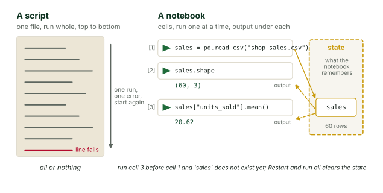
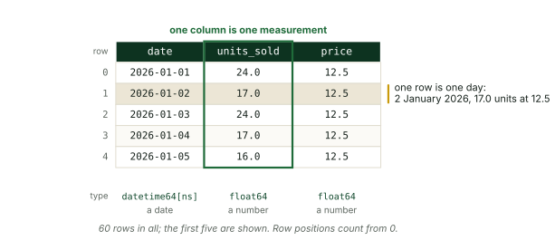
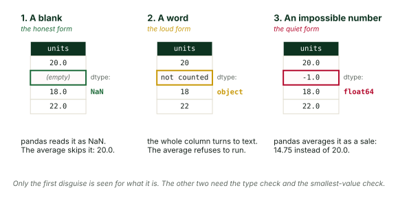
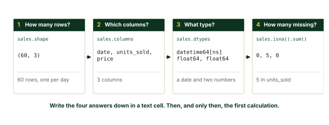
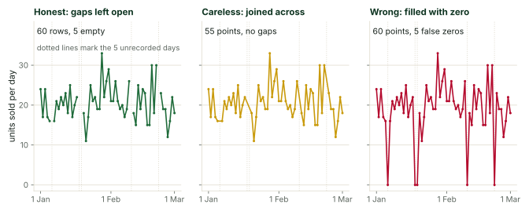

The week, day by day
De week, dag voor dag
| DayDag | PlanPlanning |
|---|---|
| MondayMaandag | Workshop: the AI partner and Colab (2 h). Skills track (3 h). Studio: teams form and start project 1 (3 h).Workshop: de AI-partner en Colab (2 u). Vaardighedenspoor (3 u). Studio: teams vormen zich en beginnen aan project 1 (3 u). |
| TuesdayDinsdag | Skills track (3 h). Workshop: reading code you did not write (2 h). Studio (3 h).Vaardighedenspoor (3 u). Workshop: code lezen die je niet zelf schreef (2 u). Studio (3 u). |
| WednesdayWoensdag | Skills track (2 h). Workshop: describe before you calculate (2 h). Industry lecture (1 h). Studio (3 h).Vaardighedenspoor (2 u). Workshop: beschrijf voordat je rekent (2 u). Bedrijfscollege (1 u). Studio (3 u). |
| ThursdayDonderdag | Skills track (2 h). Workshop: charts that tell the truth (2 h). Studio (4 h).Vaardighedenspoor (2 u). Workshop: grafieken die de waarheid vertellen (2 u). Studio (4 u). |
| FridayVrijdag | This week in AI, live with the incoming fellows (1.5 h). Studio: finish and rehearse (2.5 h). Friday review (4 h).Deze week in AI, live met de komende fellows (1,5 u). Studio: afronden en oefenen (2,5 u). Vrijdagbespreking (4 u). |
The week adds up to 10 hours of skills track, 8 hours of workshops, 15.5 hours of studio, 1.5 hours of This week in AI, 1 hour of industry lecture and 4 hours of review.
De week telt op tot 10 uur vaardighedenspoor, 8 uur workshops, 15,5 uur studio, 1,5 uur Deze week in AI, 1 uur bedrijfscollege en 4 uur bespreking.
Live this weekLive deze week
Two sessions a week are live and change every week. This is what they hold in week 1.
Twee sessies per week zijn live en veranderen elke week. Dit is wat ze in week 1 inhouden.
This week in AI, Friday 09:00 to 10:30
Deze week in AI, vrijdag 09:00 tot 10:30
The fellows who will teach the next cohort join by video call from the United States. In week 1 they introduce themselves and the work they do, then run the first brief: three stories from the week in AI, each with a source a student can open and one sentence on why it matters in Suriname; a five-minute live demonstration of a tool they tried this week, with what went wrong left in; and the tie to this week's skill, which is reading what an AI claims before trusting it. The question for the teams is set by the fellows on Thursday. The last fifteen minutes are the students' list of what the fellows should look into next week.
De fellows die de volgende groep gaan lesgeven, doen mee per videogesprek vanuit de Verenigde Staten. In week 1 stellen ze zichzelf en hun werk voor en leiden ze de eerste brief: drie verhalen uit de week in AI, elk met een bron die een student kan openen en één zin over waarom het telt in Suriname; een demonstratie van vijf minuten van een hulpmiddel dat ze deze week probeerden, met wat misging erin gelaten; en de koppeling aan de vaardigheid van deze week, namelijk lezen wat een AI beweert voordat je het vertrouwt. De vraag voor de teams stellen de fellows op donderdag. Het laatste kwartier is de lijst van de studenten met wat de fellows volgende week moeten uitzoeken.
Industry lecture, Wednesday 14:00 to 15:00
Bedrijfscollege, woensdag 14:00 tot 15:00
Company X opens the year. Its speaker brings one problem the company needs to decide, the data it records about that problem and what is missing from it, and what it hired its last data person to do on day one. The teams hand their questions to the fellows on Tuesday; the fellows add their own and keep the last twenty-five minutes for them. Students may write to the speaker afterwards at the address given in the room.
Bedrijf X opent het jaar. De spreker brengt één probleem mee waarover het bedrijf moet beslissen, de data die het over dat probleem vastlegt en wat daaraan ontbreekt, en wat de laatst aangenomen datamedewerker op dag één deed. De teams geven hun vragen op dinsdag aan de fellows; de fellows voegen hun eigen vragen toe en houden de laatste vijfentwintig minuten daarvoor vrij. Studenten mogen de spreker achteraf schrijven op het adres dat in de zaal wordt gegeven.
Once a month the lecture hour goes to a guest from a field Suriname does not have. In month 1 that guest comes in week 4.
Eén keer per maand gaat het collegeuur naar een gast uit een vakgebied dat Suriname niet heeft. In maand 1 komt die gast in week 4.
1 WatchKijken
The eight lecture parts sit in stage 3, each one above the reading that goes with it. Watch a part, then read its section.
De acht collegedelen staan in stap 3, elk boven de tekst die erbij hoort. Bekijk een deel, lees dan het bijbehorende gedeelte.
2 ListenLuisteren
3 Read and playLezen en proberen
Read each section after you watch the lecture part with the same number. The sections repeat the lecture's ideas in writing, add the details a graduate will want on paper, and point to the cells of the notebook where you run them yourself. The reading takes about an hour at a steady pace.
Lees elk onderdeel nadat je het collegedeel met hetzelfde nummer hebt bekeken. De onderdelen herhalen de ideeën van het college op papier, voegen de details toe die een afgestudeerde graag op papier heeft, en wijzen naar de cellen van het notebook waarin je ze zelf uitvoert. De tekst kost ongeveer een uur in een gelijkmatig tempo.
TranscriptTranscript (Engels)
Week one, part one. A notebook is a workbench. This part is about the place where all of your code will run this year. It is called a notebook, and it behaves differently from any program you have used before. By the end of this part you will know what a cell is, what the play button does, where the output goes, why the order you run things in matters, and what to do when the notebook gets confused. Nothing in this part needs you to write code. It asks you to watch closely and to predict what happens before it happens.
Start with a contrast. There are two ways to run code, and they feel very different. A script is a single file of instructions. You hand it to the computer, the computer runs every line from the top to the bottom, prints whatever it prints, and stops. When it stops, everything it computed is gone. A notebook is a page made of small blocks called cells. You run one cell, look at the result, and then decide what to run next. And the notebook keeps what each cell computed in memory until you tell it to forget. Hold on to those two differences, one cell at a time, and memory that stays, because they explain everything else in this part.
Here is the script version. Two lines in a file. The first prints a greeting. The second multiplies sixty by twenty-four and prints the result with the words minutes in a day. You run the file, and both lines appear in the console at once. If you want to change the second line, you edit the file and run the whole thing again, greeting included. For two lines that costs nothing. For a long analysis that loads a big table at the top, it means loading that table again every time you fix a typo at the bottom. That is the problem a notebook solves.
Now the notebook version. The same two lines, but each one sits in its own cell. Each cell has a small play button on its left. You press play on the first cell, and its output appears directly underneath it. You press play on the second cell, and its output appears underneath that one. You can run the second cell again without touching the first. You can change it, run it again, and compare. The greeting stays where it was. A notebook lets you work the way you think, one step at a time, with every result sitting right under the step that made it.
Where does this notebook live? This program uses Google Colab, which you say as co-lab. Colab is a notebook that opens in your web browser, like any web page. When you press play, the code does not run on your laptop. It runs on a computer in a Google data center, and only the results travel back to your screen. That has two consequences you will like. There is nothing to install, so you can start in the first minute of the first day. And nothing you do inside a notebook can harm your own machine. The notebook file itself is saved to your Google Drive, so it is there when you come back tomorrow.
A notebook holds two kinds of cell. A text cell holds words, headings and sometimes a picture. It explains what is about to happen or what just happened, and it has no play button, because there is nothing to run. A code cell holds instructions for the computer, and it has the play button. When you run it, whatever it produces appears directly underneath it. That might be a line of text, a table, a chart, or nothing at all. The rhythm of every notebook in this program is the same. Read the text cell. Run the code cell. Read the output. Then move to the next one.
Here is the habit this program asks of you, in slow motion, on that second cell. Before you press play, read the line. It multiplies sixty by twenty-four. Then predict. There are sixty minutes in an hour and twenty-four hours in a day, so the answer should be one thousand four hundred and forty. Say it, or write it down. Now press play. The cell prints one thousand four hundred and forty, minutes in a day. Your prediction and the output agree, so you move on. The day they disagree, you have found something worth understanding, and you found it before anyone else did.
Now the second big difference, memory. Watch three cells. The first gives a name to the number sixty. It says minutes in hour equals sixty. It prints nothing, because naming something produces no output. The second names the number twenty-four, hours in day. Again nothing is printed. The third cell multiplies the two names and prints the result, one thousand four hundred and forty, minutes in a day. The third cell never saw the number sixty. It only knew the name, and the notebook remembered what the name stood for from the cell that ran before. That remembering is the notebook's memory, and every notebook you ever open depends on it.
So this is the loop. You run a cell. Anything that cell named, loaded or computed goes into the notebook's memory. The next cell you run can see all of it. Then that cell adds its own results, and so on. The important word is run. A cell adds to the memory when it runs, not when you type it, and not because it sits higher on the page. The memory belongs to the running notebook. The page in front of you is only a list of instructions you could run. Keeping those two things apart, the page and the memory, is the whole skill of this part.
Here is what happens when you run cells out of order. Two cells. The lower one gives a shop its name. The upper one prints that name with the words is open. Suppose you open the notebook fresh and press play on the upper cell first. Red text appears. Name error, the name shop name is not defined. The notebook is telling you the truth. Nothing has run yet, so its memory is empty, and the name does not exist in it. The cell below would have created the name, but it has not run. The page has the answer. The memory does not. Run the lower cell, then the upper one, and the error goes away.
This gives you the one rule of this part. Cells run in the order you run them, not in the order they sit on the page. If you always run from the top to the bottom, the page and the memory stay the same, and the notebook behaves exactly as it reads. The moment you jump around, running a cell near the end and then one near the start, the two drift apart. Something will work that should not, or fail that should not. When a notebook confuses you this week, and it will, the most likely reason is not a bug in the code. It is that the memory and the page no longer agree.
Now the misconception, and almost everyone falls for it in the first week. People believe that the page is the memory. They edit a cell and expect the notebook to know the new version. They delete a cell and expect its results to disappear. Neither is true. Editing a cell changes the text on the page and nothing else, until you run it again. Deleting a cell removes its text, but whatever it put into memory stays there, invisible, until you restart. The notebook does not read your page. It only remembers what ran. Watch the next example closely, because it will catch you one day.
Here it is. The first cell named the shop, the corner shop, and you ran it. The second cell prints the name, and you ran that too. Then you went back and changed the first cell to read the market stall. You did not run it again. Now you run the second cell, and it prints the corner shop. On your screen, the first cell plainly says market stall, and the output below it plainly says corner shop. Nothing is broken. The memory still holds the version that ran, and the page holds the version you typed. Until you press play on the edited cell, the notebook has no idea you changed anything.
There is a clean way out of every confusion like that, and it is called restarting. In the runtime menu, restart empties the notebook's memory completely. Every name, every table, every result is gone. The page is untouched, so you lose no work. Right beside it is restart and run all, which empties the memory and then runs every cell from the top of the page to the bottom, in page order. If the notebook runs cleanly, you know the page and the memory agree, and anyone who opens your notebook will see what you see. If it stops with red text, that red text points at the exact cell where the page and the memory had drifted apart.
Make that a habit, and make it the last thing you do before you trust a notebook or hand it to anyone. Restart. Run all. Then read it from the top to the bottom, checking that every output is the one you expected. A notebook that only works because of something you ran an hour ago and then deleted is not finished. It works on your screen and nowhere else. This week's notebook asks you to do this before each check cell, and the project asks you to do it before anything leaves your team. It takes a minute, and it catches more mistakes than any other minute you will spend.
A word about red text, because you have now seen it twice. When a cell fails, the notebook prints an error underneath it, in red, in the same place normal output would go. New students see red and stop reading. Do the opposite. The last line of an error names the kind of problem, and it usually names the cause, like the name that was not defined a moment ago. Read that line first. Then paste the whole error to your AI assistant and ask it to explain what went wrong, not only to fix it. An error you understand teaches you something. An error that simply vanished teaches you nothing, and it tends to come back.
One more fact about Colab that follows from all this. The computer in the data center is lent to you for a while, not given to you. Close the tab, or leave the notebook alone long enough, and that computer is taken back. Its memory goes with it. Your page is safe, because the text and the code are saved in your Drive. But every name, every loaded table, and any file you uploaded during the session are gone. This surprises people on day two. It should not surprise you. When you come back to a notebook, you start by running it again from the top, which is exactly the habit you have just learned.
Before we close, one look ahead. So far every output has been a line of text. Output can also be a table or a chart, and it lands in the same place, under the cell that made it. This week's notebook loads a small sales table for a shop that does not exist, and asks for its first rows. The output is a table with a date, the units sold and a price, with the first rows numbered from zero. Zero, not one. Computers count from zero, and the notebook shows you that in its very first table. Later parts of this week take that table apart. For now, notice only where the output appears and that you can read it before you do anything else.
Here is what you can now do. You can open a notebook in Colab and run a cell with the play button, knowing the code runs in a data center and the result comes back under the cell. You can tell a text cell from a code cell. You can explain that a notebook remembers what ran, not what is written, and so you can explain why running cells out of order breaks it, and why an edited cell changes nothing until it runs again. And you know the finishing habit, restart and run all, that makes a notebook trustworthy. In the next part you ask an AI assistant for code to put in those cells, and you will see that how you ask matters more than how you type.
1. A notebook is a workbench
1. Een notebook is een werkbank
A notebook is a document made of cells. Each cell holds either a few lines of code or a few lines of text. You run one cell at a time, and its result appears directly under it. The text cells explain, the code cells act, and the results sit between them in the order you made them. That is the whole idea, and everything in this program is built on it.
Een notebook is een document dat uit cellen bestaat. Elke cel bevat óf een paar regels code óf een paar regels tekst. Je voert één cel tegelijk uit, en het resultaat verschijnt er direct onder. De tekstcellen leggen uit, de codecellen doen iets, en de resultaten staan ertussen in de volgorde waarin je ze maakte. Dat is het hele idee, en alles in dit programma bouwt daarop voort.
Compare this with a script. A script is a file of code that a computer runs from top to bottom in one go. If line forty fails, you see one error and nothing else, and you start again from line one. A notebook lets you run line forty on its own, look at what it produced, change one word and run it again. For someone who has never coded, that difference is the difference between a locked box and a workbench with every tool in view.
Vergelijk dit met een script. Een script is een bestand met code die een computer in één keer van boven naar beneden uitvoert. Als regel veertig mislukt, zie je één foutmelding en verder niets, en je begint opnieuw bij regel één. In een notebook kun je regel veertig apart uitvoeren, kijken wat hij opleverde, één woord veranderen en hem opnieuw draaien. Voor iemand die nooit heeft geprogrammeerd is dat het verschil tussen een gesloten kist en een werkbank waarop elk gereedschap zichtbaar ligt.
Google Colab is a website that runs notebooks for free. The code does not run on your laptop. It runs on a computer in a Google building. The result travels back to your browser about a second later. Nothing needs to be installed, and nothing you type can damage your own machine. You sign in with a Google account, open the notebook link from this page, and save a copy to your own Drive so that your changes belong to you.
Google Colab is een website die notebooks gratis uitvoert. De code draait niet op je laptop. Ze draait op een computer in een gebouw van Google, en het resultaat reist ongeveer een seconde later terug naar je browser. Je hoeft niets te installeren, en niets wat je typt kan je eigen machine beschadigen. Je logt in met een Google-account, opent de notebooklink op deze pagina en bewaart een kopie in je eigen Drive, zodat je wijzigingen van jou zijn.
Every code cell has a play button on its left edge. Click it, or hold Shift and press Enter, to run the cell. The first cell of this week's notebook prints a greeting and a small calculation.
Elke codecel heeft links een afspeelknop. Klik erop, of houd Shift ingedrukt en druk op Enter, en de cel wordt uitgevoerd. De eerste cel van het notebook van deze week drukt een groet en een kleine berekening af.
print("Hello from BiGi Data")
print(60 * 24, "minutes in a day")Under the cell you see two lines, Hello from BiGi Data and 1440 minutes in a day. The second line shows the pattern you will see all week. The computer did the arithmetic, sixty times twenty-four, and printed the result next to a label you wrote. You read the output and judge whether it makes sense. An hour has sixty minutes and a day has twenty-four hours. The number is right.
Onder de cel zie je twee regels, Hello from BiGi Data en 1440 minutes in a day. De tweede regel toont het patroon dat je de hele week zult zien. De computer deed het rekenwerk, zestig maal vierentwintig, en drukte het resultaat af naast een label dat jij schreef. Jij leest de uitvoer en beoordeelt of ze klopt. Een uur heeft zestig minuten en een dag vierentwintig uur, dus het getal is juist.
Cells remember. When a cell creates a table called sales, every cell you run afterwards can use sales, even a cell higher up the page. The notebook keeps this memory, which programmers call state, for as long as the session lives. State is what makes a notebook convenient. It is also the source of the most common confusion of the first week. Cells run in the order you click them, and the page order is only a suggestion. If you run cell six before cell five, cell six may complain that a name does not exist yet, or worse, it may use an older version of a table that a later cell has since replaced.
Cellen onthouden. Als een cel een tabel met de naam sales maakt, kan elke cel die je daarna uitvoert sales gebruiken, ook een cel hoger op de pagina. Het notebook bewaart dit geheugen, dat programmeurs de toestand noemen, zolang de sessie leeft. De toestand maakt een notebook handig, en ze is ook de bron van de meest voorkomende verwarring in de eerste week. Cellen worden uitgevoerd in de volgorde waarin je erop klikt, en de volgorde op de pagina is maar een suggestie. Als je cel zes vóór cel vijf uitvoert, kan cel zes klagen dat een naam nog niet bestaat, of erger, een oudere versie van een tabel gebruiken die een latere cel inmiddels heeft vervangen.

sales, in a state that every later cell can use.Een script draait als één geheel en stopt bij de eerste fout; een notebook voert één cel tegelijk uit, drukt de uitvoer onder elke cel af en bewaart wat de cellen maakten, hier de tabel sales, in een toestand die elke latere cel kan gebruiken.The cure is one menu item. Runtime, then Restart and run all, throws away everything the notebook remembers and runs every cell from the top in page order. When a notebook behaves strangely, restart it before you look for a bug in the code. A notebook that gives the right answers after a restart is trustworthy. A notebook that only gives the right answers in the order you happened to click is not, and nobody else will be able to repeat your result.
De remedie is één menukeuze. Runtime, dan Restart and run all, gooit alles weg wat het notebook onthoudt en voert elke cel vanaf de bovenkant in paginavolgorde uit. Als een notebook zich vreemd gedraagt, herstart het dan voordat je een fout in de code zoekt. Een notebook dat na een herstart de juiste antwoorden geeft, is betrouwbaar. Een notebook dat alleen de juiste antwoorden geeft in de volgorde waarin jij toevallig klikte, is dat niet, en niemand anders kan jouw resultaat dan herhalen.
Red text under a cell is an error report. It is the computer telling you what stopped it and on which line. Read the report from the bottom up, because its final line names the problem in the plainest words. A misspelled name, a missing bracket and a table that does not exist yet produce three different last lines, and after a week you will recognise all three on sight. Paste the whole report into your AI assistant and ask it to explain the error before you ask it for a fix. The explanation is what you keep; the fix is often one character.
Rode tekst onder een cel is een foutrapport. Het is de computer die je vertelt wat hem tegenhield en op welke regel. Lees het van onder naar boven, want de laatste regel noemt het probleem in de duidelijkste woorden. Een verkeerd gespelde naam, een ontbrekend haakje en een tabel die nog niet bestaat geven drie verschillende laatste regels, en na een week herken je alle drie op het eerste gezicht. Plak het hele rapport in je AI-assistent en vraag om een uitleg van de fout voordat je om een oplossing vraagt. De uitleg is wat je bewaart; de oplossing is vaak één teken.
Work in the notebook with the lecture part open beside it. Run each cell, read the output, and only then move to the next. The habit of reading output before running the next cell is the first of the five habits this week teaches, and the other four depend on it.
Werk in het notebook met het collegedeel ernaast open. Voer elke cel uit, lees de uitvoer, en ga pas dan naar de volgende. De gewoonte om uitvoer te lezen voordat je de volgende cel uitvoert, is de eerste van de vijf gewoonten die deze week leert, en de andere vier hangen ervan af.
TranscriptTranscript (Engels)
2. Asking an AI assistant for code
2. Een AI-assistent om code vragen
Working analysts now write much of their code by asking an AI assistant for it. The skill that matters has moved. It used to be remembering the exact words a language expects. Now it is knowing what to ask for, reading what comes back, and noticing when the answer is wrong. The typing was never the hard part of data work. The assistant has made that plain.
Analisten schrijven tegenwoordig een groot deel van hun code door er een AI-assistent om te vragen. De vaardigheid die telt is verschoven. Vroeger was het de precieze woorden onthouden die een taal verwacht. Nu is het weten wat je vraagt, lezen wat terugkomt en opmerken wanneer het antwoord fout is. Het typen was nooit het moeilijke deel van datawerk, en de assistent heeft dat duidelijk gemaakt.
A request for code has three parts, and most bad answers come from a request that left one of them out. The first part is the data. Name the table and the columns the assistant should use, with their exact spelling, because units_sold and units are different names to a computer. The second part is the shape of the answer. Say whether you want one number, a column, a new table or a chart, and what it should be called. The third part is the unit. Say whether the answer is per day, per week, in units or in money. An assistant that knows the data, the shape and the unit has little room left to guess.
Een verzoek om code heeft drie delen, en de meeste slechte antwoorden komen uit een verzoek waarin er één ontbrak. Het eerste deel is de data. Noem de tabel en de kolommen die de assistent moet gebruiken, met de exacte spelling, want units_sold en units zijn voor een computer verschillende namen. Het tweede deel is de vorm van het antwoord. Zeg of je één getal, een kolom, een nieuwe tabel of een grafiek wilt, en hoe die moet heten. Het derde deel is de eenheid. Zeg of het antwoord per dag, per week, in stuks of in geld is. Een assistent die de data, de vorm en de eenheid kent, heeft weinig ruimte over om te gissen.
The lecture walks through three requests for the same thing. They are repeated here because the pattern is worth having on paper. The first request is vague. It says, in effect, how are sales going. The assistant has to invent a table name, choose a column, decide between a total and an average, and pick a period. It will produce code that runs, built on four guesses. You will have no way to tell which guess went wrong.
Het college loopt drie verzoeken om hetzelfde door, en de tekst herhaalt ze hier omdat het patroon op papier van pas komt. Het eerste verzoek is vaag. Het zegt in feite hoe gaat het met de verkoop. De assistent moet een tabelnaam verzinnen, een kolom kiezen, beslissen tussen een totaal en een gemiddelde, en een periode bepalen. Hij levert code die draait, gebouwd op vier gissingen, en jij hebt geen manier om te zien welke gissing fout ging.
The second request is better. It names the table, sales, and asks for the average of units_sold. The assistant no longer has to guess the data or the shape. It still has to decide what to do about the rows where units_sold is empty, and in the shop case that decision is where the quiet mistake of part seven comes from.
Het tweede verzoek is beter. Het noemt de tabel, sales, en vraagt het gemiddelde van units_sold. De assistent hoeft de data of de vorm niet meer te gissen. Hij moet nog wel beslissen wat hij doet met de rijen waarin units_sold leeg is, en in de winkelcasus is die beslissing de bron van de stille fout uit deel zeven.
The third request is exact. It names the table and the column, asks for the average per recorded day, says that empty values mean nobody wrote the sales down and must be left out, and asks for the number of days the average used to be printed beside it. Most people leave out the request for the count. It is what makes the answer checkable. An answer that arrives with its own count can be judged. An answer that arrives alone has to be trusted.
Het derde verzoek is exact. Het noemt de tabel en de kolom, vraagt het gemiddelde per opgeschreven dag, zegt dat lege waarden betekenen dat niemand de verkoop noteerde en dat ze buiten beschouwing moeten blijven, en vraagt om het aantal dagen dat het gemiddelde gebruikte ernaast af te drukken. De meeste mensen laten de vraag om het aantal weg. Juist die maakt het antwoord controleerbaar. Een antwoord dat met zijn eigen telling aankomt, kan worden beoordeeld. Een antwoord dat alleen aankomt, moet worden vertrouwd.
What comes back from the assistant is usually a short block of code, an explanation and sometimes a sample of output it imagined. Treat the imagined output as fiction. The assistant has not run the code on your table and does not know what is in it. Only the output under your own cell, on your own data, counts as evidence.
Wat van de assistent terugkomt, is meestal een kort blok code, een uitleg en soms een voorbeeld van uitvoer die hij zich voorstelde. Behandel die voorgestelde uitvoer als fictie. De assistent heeft de code niet op jouw tabel uitgevoerd en weet niet wat erin staat. Alleen de uitvoer onder je eigen cel, op je eigen data, telt als bewijs.
Keep a log of your requests. In the project this week your team records every request to the assistant, the code it returned and what you did with it. The log is not a formality. It is how a team finds out on Thursday where a wrong number entered on Tuesday. It is also how a reader of your work can see which decisions were yours and which were the assistant's.
Houd een logboek van je verzoeken bij. In het project van deze week legt je team elk verzoek aan de assistent vast, de code die terugkwam en wat je ermee deed. Het logboek is geen formaliteit. Het is hoe een team op donderdag ontdekt waar op dinsdag een fout getal binnenkwam, en hoe een lezer van je werk kan zien welke beslissingen van jou waren en welke van de assistent.
A few phrasings earn their place in every request. Ask the assistant to use the column names you give and no others. Ask it to print every intermediate number it computes so that you can read them. Ask it to say what it assumed. An assistant asked to state its assumptions will often name the exact choice you would have missed, such as what it did with the empty cells, and that one sentence saves an afternoon.
Een paar formuleringen verdienen een plek in elk verzoek. Vraag de assistent de kolomnamen te gebruiken die jij geeft en geen andere. Vraag hem elk tussenresultaat af te drukken dat hij berekent, zodat jij het kunt lezen. Vraag hem te zeggen wat hij aannam. Een assistent die om zijn aannames wordt gevraagd, noemt vaak precies de keuze die jij gemist zou hebben, zoals wat hij met de lege cellen deed, en die ene zin bespaart een middag.
TranscriptTranscript (Engels)
Week one, part three. Reading code you did not write. Most of the code you run this year will come from an AI assistant. You will not have typed it, and you will still be the person who answers for the number it produces. This part teaches one habit for that situation. Before you run a cell, write down what you expect it to show. Then read the cell line by line, and only then press play. By the end of this part you will be able to read a short cell you have never seen, say what each line does, and tell whether the output matches what you expected.
Start with two readers and one cell. An assistant has written three lines of code that produce one number. The first reader presses play, sees the number, and reads the number. The second reader covers the play button, reads the three lines, writes down what she thinks will appear, and then runs the cell. Both readers now see the same number. The first reader knows what the screen says. The second reader knows what the number is, because she knows which column it came from, which days it counted, and what unit it is in. The difference between those two readers is the whole of this part.
Here is the trick that makes code readable for someone who has never written any. Every line has three parts. On the left of the equals sign is a name. That is the variable, the label the code will use later for whatever this line produces. After a dot comes an action, with round brackets after it. That is the method, the thing being done. And the line leaves something behind, the result, which is stored under the name. So you read a line as a sentence. This name gets this action, done to this thing. You do not need to know how the action works inside. You need to know what it is called, what it was given, and what kind of thing it hands back.
Take the first real line of the notebook and read it slowly. On the left, the word sales. That is the variable. Everything this line makes will answer to the name sales from now on. On the right, p d dot read c s v. P d is the short name the notebook gave the pandas library, and read c s v is the method, an action that reads a file of comma separated values. Inside the round brackets is what the method is given. The file name, shop sales dot c s v, and an option, parse dates, which asks for the date column to be read as dates and not as text. The result is a table. So the sentence is: sales gets the table that pandas reads from this file, with the dates read as dates.
Now the prediction, and why it has to be written down. Ask three questions of the cell before you run it. What kind of thing will appear: a single number, a table, a picture, or a word? How big will it be: one value, five rows, all sixty rows? And what unit: units sold, dollars, days, a date? Write the answers in the text cell above the code, or on paper. A prediction kept in your head is not safe, because the moment the output appears, your memory bends to agree with it. You will believe you expected whatever you see. Ink does not bend. A written prediction can be wrong, and a wrong prediction is the most useful thing you will produce today, because it shows you a line you did not understand.
Worked example one. Two lines. The first we have read: sales gets the table from the file. The second is sales dot head, with empty brackets. Head is a method, and the empty brackets mean it was given nothing, so it uses its usual setting, which is the first five rows. Prediction, written down: a table, five rows, with the columns the file holds. Now run it. A table appears with five rows numbered zero to four and three columns: date, units sold, and price. The first day shows twenty four units sold at a price of twelve fifty. The second day shows seventeen. The prediction said five rows and a table, and that is what came back. When the prediction matches, you move on with a small, earned confidence.
Dots chain actions together, and long chains are what make a line look hard. Read a dot as the words and then. Sales, in square brackets, units sold, is the units sold column of the sales table. Square brackets pick something out. Add dot count with empty brackets and the sentence is: take the units sold column, and then count the values in it. Sales dot is n a dot sum reads: take the table, and then mark each value as missing or not, and then add up the marks. Read left to right, one dot at a time, and say and then at each one. A line with four dots is four short sentences, not one long one.
Worked example two, three lines that describe the table. Line one prints sales dot shape. Shape has no brackets, so it is a property, not an action, and it holds the size of the table. Prediction: two numbers, rows and columns, and we expect sixty rows because the notebook made sixty days. Line two prints sales dot d types, the type of each column. Prediction: three lines, one per column. Line three prints the missing count per column. Prediction: three small numbers. Now run it. Sixty rows and three columns. The date column holds dates, and the other two hold decimal numbers. And the missing counts are zero, five, and zero. The prediction said some missing values and could not say how many. Now the record says five, in units sold. Write that down. You will need it in a moment.
Sometimes a word in the line is one you cannot explain. That word is not a reason to stop reading. It is the exact place to ask the assistant a question. Ask what the word does, not whether the code is right. Here the reader asks what is n a does. The assistant explains that it marks each value as missing or present, and that sum adds up the marks, one count per column. The reader checks her understanding with a second question, and gets a short yes. That took thirty seconds, and now she can read the line. If you ask the assistant whether its own code is right, it will say yes in the same calm voice whether it is right or not. Ask what, never ask whether.
Worked example three is the cell this whole week is built around. The notebook asked the assistant for the average number of units sold per day, and the assistant wrote these three lines. Read them before you run them. Line one is a comment, a note for humans that the computer ignores. Line two: the variable is average units. The chain reads: take the units sold column, and then fill n a with zero, and then take the mean. Line three prints a label and the number rounded to two decimals. Prediction, written down: one number, in units sold per day. The first rows showed twenty four, seventeen and sixteen, so somewhere near twenty. And one word in line two you may not be able to explain: fill n a. Circle it. A prediction with a circled word in it is an honest prediction.
Now run it. The cell prints: average units sold per day, eighteen point nine. Compare with the prediction. One number, yes. Units per day, yes. Near twenty, yes. By the first reader's standard this is done. By the second reader's standard it is not, because the circled word is still circled. What does fill n a with zero do to a column that has five missing values? Ask the assistant that question, in those words, and you will hear that it replaces each missing value with zero before the mean is taken. Hold that thought. Part seven of this week runs the numbers and shows what it cost. For now, notice what the reading did: it found the one word in three lines where the mistake lives, and it found it before the number was copied anywhere.
Here is the misconception that stops most graduates. I have never coded, so I cannot read code. You read contracts without being a lawyer. You read a prescription without being a doctor. In both cases you read for what matters to you: who is bound to do what, how much of which medicine, how often. Code is the same. You read for the name, the action and the result. How pandas computes a mean inside is not your job this week, and it is not the job of most people who use it. What is your job is knowing that mean was asked for, which column it was asked of, and whether anything was done to the column first. Those three facts were in plain sight in the line you just read.
A second misconception follows from the first. If I do not understand the line, the computer does, so it must be fine. The computer checks spelling, not meaning. When a cell runs without a red message, it is telling you the grammar was correct. It is not telling you that the right column was chosen, or that filling the gaps with zero was a sensible thing to do. Both of those run cleanly. The assistant's cell ran cleanly. Only a reader checks the meaning, and the reader is you.
Put the habit in one loop. Predict: write down what kind of thing, how big, what unit. Read: each line as a sentence, name, action, result, and then at every dot. Run: press play. Compare: the output against the written prediction, and against the data you described. Ask: for every circled word, ask the assistant what it does. Then around again, because the answer to that question often changes the prediction. This loop takes a minute for a short cell. It is the minute that separates a number on a screen from a number you can defend.
To make the habit fast, keep four questions beside your notebook and answer them in writing before every cell an assistant gives you. What is the name on the left, and what will it hold? Which column is being used, and what was done to it before the calculation? What kind of output do I expect, how big, and in what unit? And which word can I not explain yet? The fourth question is the one that catches mistakes. In the shop cell the answer was fill n a, and that single word is the subject of part seven.
Remember, write the prediction down before you press play. Read each line as name, method, result, and say and then at every dot. Circle any word you cannot explain and ask the assistant what it does, never whether it is right. A clean run checks grammar, not meaning. You can now take a cell you did not write, say what each line does, and tell whether its output matches what you expected. The next part turns to the table itself: what a row is, what a column is, and why a number stored as text cannot be averaged.
3. Reading code you did not write
3. Code lezen die je niet zelf schreef
Code from an assistant arrives finished and confident. The temptation is to paste it into a cell and press play. Resist it for the length of one breath, and in that breath write down what you expect the cell to print. A prediction written before the run is the only thing that can tell you the result is wrong, because once a number is on the screen it looks like the answer. If you expect about twenty and the cell prints eighteen point nine, you have a question to ask. If you had no expectation, eighteen point nine looks fine.
Code van een assistent komt af en zelfverzekerd aan. De verleiding is om ze in een cel te plakken en op afspelen te drukken. Weersta die één ademtocht lang, en schrijf in die ademtocht op wat je verwacht dat de cel afdrukt. Een voorspelling die vóór het uitvoeren is opgeschreven, is het enige dat je kan vertellen dat het resultaat fout is, want zodra een getal op het scherm staat, ziet het eruit als het antwoord. Als je ongeveer twintig verwacht en de cel drukt achttien komma negen af, heb je een vraag te stellen. Als je geen verwachting had, ziet achttien komma negen er prima uit.
Then read the code one line at a time, and read each line in three pieces. On the left is usually a name, the variable, which is the label the result will be stored under. In the middle is the thing being worked on, a table or a column. On the right are the methods, the operations applied in order, each one introduced by a dot. Say each line out loud in plain words. The habit feels slow for two days and then becomes the fastest way you know to find a mistake.
Lees de code dan regel voor regel, en lees elke regel in drie stukken. Links staat meestal een naam, de variabele, het label waaronder het resultaat wordt opgeslagen. In het midden staat het ding waaraan wordt gewerkt, een tabel of een kolom. Rechts staan de methoden, de bewerkingen die op volgorde worden toegepast, elk ingeleid door een punt. Zeg elke regel hardop in gewone woorden. De gewoonte voelt twee dagen traag en wordt dan de snelste manier die je kent om een fout te vinden.
Take the cell the assistant wrote when the notebook asked it for the average number of units the shop sold per day.
Neem de cel die de assistent schreef toen het notebook om het gemiddelde aantal stuks vroeg dat de winkel per dag verkocht.
average_units = sales["units_sold"].fillna(0).mean()
print("Average units sold per day:", round(average_units, 2))Read aloud, the first line says the following. Take the table sales. Take its column units_sold. Replace every empty value in that column with zero. Take the mean of what is left. Store the result under the name average_units. Four small steps, and the third one is a decision that nobody asked for. The second line rounds the number to two decimal places and prints it after a label.
Hardop gelezen zegt de eerste regel het volgende. Neem de tabel sales. Neem haar kolom units_sold. Vervang elke lege waarde in die kolom door nul. Neem het gemiddelde van wat overblijft. Sla het resultaat op onder de naam average_units. Vier kleine stappen, en de derde is een beslissing waar niemand om vroeg. De tweede regel rondt het getal af op twee decimalen en drukt het af achter een label.
Notice what reading aloud did. The word fillna looks technical and easy to skip. Said in plain words, replace every empty value with zero, it is a claim about the world, that an unrecorded day was a day with no sales. You may agree or disagree, and part five argues that in this shop the claim is false. The point for now is that you could not have agreed or disagreed without reading the line. You would not have read the line if you had pressed play first.
Merk op wat hardop lezen deed. Het woord fillna ziet er technisch uit en is makkelijk over te slaan. In gewone woorden gezegd, vervang elke lege waarde door nul, is het een bewering over de wereld, namelijk dat een niet-genoteerde dag een dag zonder verkoop was. Je kunt het ermee eens of oneens zijn, en deel vijf betoogt dat de bewering in deze winkel onjuist is. Het punt voor nu is dat je het er niet mee eens of oneens had kunnen zijn zonder de regel te lezen, en dat je de regel niet gelezen zou hebben als je eerst op afspelen had gedrukt.
Three kinds of line make up almost all the code you will meet this month. An assignment stores something under a name, with a single equals sign in the middle. A method call applies an operation to something, with a dot and round brackets. A print shows a value under the cell. When a line looks hard, find which of the three it is, and then find the variable, the thing and the methods. Long lines are usually several method calls chained together, and you read them left to right the way you read a recipe.
Drie soorten regels vormen bijna alle code die je deze maand tegenkomt. Een toewijzing slaat iets op onder een naam, met één gelijkteken in het midden. Een methodeaanroep past een bewerking toe op iets, met een punt en ronde haakjes. Een print toont een waarde onder de cel. Als een regel moeilijk lijkt, zoek dan uit welke van de drie het is, en zoek daarna de variabele, het ding en de methoden. Lange regels zijn meestal verschillende methodeaanroepen aan elkaar geketend, en je leest ze van links naar rechts zoals je een recept leest.
Reading also catches a second kind of problem, code that does something other than what you asked. An assistant asked for the average per day sometimes returns the total, or the average per week, or the average of the wrong column. The code runs, the number is a number, and only a reader who checks the column name and the method against the request will notice. When the code and the request disagree, the request wins, and you ask again.
Lezen vangt ook een tweede soort probleem op, code die iets anders doet dan wat je vroeg. Een assistent die om het gemiddelde per dag wordt gevraagd, geeft soms het totaal terug, of het gemiddelde per week, of het gemiddelde van de verkeerde kolom. De code draait, het getal is een getal, en alleen een lezer die de kolomnaam en de methode met het verzoek vergelijkt, zal het merken. Als de code en het verzoek het niet met elkaar eens zijn, wint het verzoek, en vraag je opnieuw.
Write your prediction in a text cell above the code, run the code, and then write one line under it saying whether the prediction held. That three-line record is small, and across a week it becomes the clearest account of what you learned. The notebook for this week leaves room for it after every worked cell.
Schrijf je voorspelling in een tekstcel boven de code, voer de code uit, en schrijf er dan één regel onder of de voorspelling uitkwam. Dat verslag van drie regels is klein, en over een week wordt het het duidelijkste overzicht van wat je leerde. Het notebook van deze week laat er na elke uitgewerkte cel ruimte voor.
TranscriptTranscript (Engels)
4. A table: rows, columns and types
4. Een tabel: rijen, kolommen en typen
A table is the shape almost all data arrives in. One row is one thing, and one column is one measurement or label about that thing. In the shop table a row is a day. The columns are the date, the units sold and the price. A gradebook has a row per student and a column per assignment. A list of imports has a row per shipment and a column for the product, the weight and the value. Once you see the world this way, the first question about any dataset is what one row stands for, and the answer should fit in a few words.
Een tabel is de vorm waarin bijna alle data aankomt. Eén rij is één ding, en één kolom is één meting of label over dat ding. In de winkeltabel is een rij een dag, en de kolommen zijn de datum, de verkochte stuks en de prijs. Een cijferlijst heeft een rij per student en een kolom per opdracht. Een invoerlijst heeft een rij per zending en een kolom voor het product, het gewicht en de waarde. Zodra je de wereld zo bekijkt, is de eerste vraag bij elke dataset waar één rij voor staat, en het antwoord moet in een paar woorden passen.
The file format you will meet most is CSV, which stands for comma-separated values. It is a plain text file with one row per line and commas between the values, and every tool can read it. The library that reads it into Python is pandas, and the object it makes is called a DataFrame. The notebook writes the shop's sales to a file called shop_sales.csv and then reads it back, the way you would read any file you were handed.
Het bestandsformaat dat je het vaakst zult zien is CSV, wat staat voor comma-separated values, door komma's gescheiden waarden. Het is een gewoon tekstbestand met één rij per regel en komma's tussen de waarden, en elk programma kan het lezen. De bibliotheek die het in Python inleest heet pandas, en het object dat ze maakt heet een DataFrame. Het notebook schrijft de verkoop van de winkel naar een bestand met de naam shop_sales.csv en leest het dan terug, zoals je elk bestand zou lezen dat je krijgt aangereikt.
The first rows of the shop table, shown by sales.head(), look like this. The first row is dated the first of January 2026, with 24.0 units sold at a price of 12.5. The second row is the next day, with 17.0 units at the same price. The number in the left margin is the row's position. Positions count from zero, so the first row is row 0. That convention surprises everyone once.
De eerste rijen van de winkeltabel, getoond door sales.head(), zien er zo uit. De eerste rij heeft als datum 1 januari 2026, met 24,0 verkochte stuks tegen een prijs van 12,5. De tweede rij is de dag erna, met 17,0 stuks tegen dezelfde prijs. Het getal in de linkermarge is de positie van de rij, en posities tellen vanaf nul, dus de eerste rij is rij 0. Die afspraak verrast iedereen één keer.

Every column has a type. The type decides what you can do with it. Four types cover almost everything this month. A number can be added and averaged. A date can be sorted and spaced on a time axis. A true or false value can be counted. Text can be compared and grouped, and nothing else. In pandas a whole number shows as int64, a number with a decimal part as float64, a date as datetime64[ns], and text as object. The shop table's dtypes line reads date datetime64[ns], units_sold float64 and price float64, which is what you want. The date column is a date, which lets the chart in part eight space the days correctly. The two measurements are numbers, which lets them be averaged.
Elke kolom heeft een type, en het type bepaalt wat je ermee kunt doen. Vier typen dekken bijna alles van deze maand. Een getal kan worden opgeteld en gemiddeld. Een datum kan worden gesorteerd en op een tijdas geplaatst. Een waar-of-onwaarwaarde kan worden geteld. Tekst kan worden vergeleken en gegroepeerd, en verder niets. In pandas verschijnt een geheel getal als int64, een getal met decimalen als float64, een datum als datetime64[ns], en tekst als object. De dtypes-regel van de winkeltabel leest date datetime64[ns], units_sold float64 en price float64, en dat is wat je wilt. De datumkolom is een datum, zodat de grafiek in deel acht de dagen juist kan plaatsen, en de twee metingen zijn getallen, zodat ze gemiddeld kunnen worden.
The type is decided by the whole column, and one stray value can change it. Later in the notebook a second shop sends its sales as a file in which the person counting wrote the words not counted on the days they skipped. The row for the fifth of March reads not counted where a number should be. Because one cell holds words, pandas reads the entire column as text, and its dtypes line says units_sold object. A column of text cannot be averaged. When the notebook asks for its mean, pandas refuses and prints a message that begins Could not convert string, followed by every value in the column glued into one long word. The refusal is loud, which makes it the kind sort of mistake. The first sign of trouble was visible earlier still, in the type, before any calculation.
Het type wordt door de hele kolom bepaald, en één afwijkende waarde kan het veranderen. Later in het notebook stuurt een tweede winkel haar verkoop als een bestand waarin degene die telde de woorden not counted schreef op de dagen die werden overgeslagen. De rij van 5 maart leest not counted waar een getal zou moeten staan. Omdat één cel woorden bevat, leest pandas de hele kolom als tekst, en de dtypes-regel zegt units_sold object. Van een kolom tekst kan geen gemiddelde worden genomen. Als het notebook om het gemiddelde vraagt, weigert pandas en drukt het een melding af die begint met Could not convert string, gevolgd door elke waarde in de kolom aan elkaar geplakt tot één lang woord. De weigering is luid, en dat maakt het de vriendelijke soort fout. Het eerste teken van problemen was nog eerder zichtbaar, in het type, vóór enige berekening.
The same trap appears in gentler forms. A number written with a thousands separator, such as 1,134, is text to a computer. A number with a currency sign in front of it is text. A date typed as words is text. A column of yes and no is text until you tell the computer which word means true. None of these stop the file from opening, and all of them stop the arithmetic. Checking the type of every column is therefore a step in its own right. It comes before the first average.
Dezelfde valkuil verschijnt in mildere vormen. Een getal met een scheidingsteken voor duizendtallen, zoals 1.134, is tekst voor een computer. Een getal met een valutateken ervoor is tekst. Een datum die in woorden is getypt, is tekst. Een kolom met ja en nee is tekst totdat je de computer vertelt welk woord waar betekent. Geen van deze gevallen verhindert dat het bestand opent, en alle verhinderen ze het rekenwerk. Het type van elke kolom controleren is daarom een stap op zichzelf, en die komt vóór het eerste gemiddelde.
You reach a column by its name in square brackets, sales["units_sold"], and a row by its position with sales.loc[2], which is the third row because counting starts at zero. The notebook uses both. Column access is the one you will type most, because almost every question about a table is a question about one or two of its columns.
Je bereikt een kolom via haar naam tussen rechte haken, sales["units_sold"], en een rij via haar positie met sales.loc[2], wat de derde rij is omdat het tellen bij nul begint. Het notebook gebruikt beide. Kolomtoegang is wat je het meest zult typen, want bijna elke vraag over een tabel is een vraag over één of twee van haar kolommen.
Write the description of a table down before you do anything with it. Say what one row is, list the columns with their types, and note anything odd. This is a data dictionary, and in the project your team writes one on Monday morning. It will be the first page a reader opens. It is also the page that most often reveals that two teammates understood the table differently.
Schrijf de beschrijving van een tabel op voordat je er iets mee doet. Zeg wat één rij is, noem de kolommen met hun typen, en noteer alles wat vreemd is. Dit is een datawoordenboek, en in het project schrijft je team er maandagochtend een. Het is de eerste pagina die een lezer opent, en het is de pagina die het vaakst laat zien dat twee teamgenoten de tabel verschillend begrepen.
TranscriptTranscript (Engels)
Week one, part five. Missing is not zero. Every table you will ever work with has holes in it. A day nobody counted, a form with a question left blank, a sensor that was switched off for an hour. This part is about what those holes mean, the three ways they hide in a file, and why the most tempting way to fix them, writing a zero, turns an honest gap into a false fact. By the end you should be able to find the missing values in a table, say what each one means, and refuse to fill it with a number you do not have.
Start with two shops that keep a record book of what they sell each day. In the first shop, the sixth of January is a holiday. The shop is closed, the owner writes a zero in the book, and that zero is true. Zero units were sold because the door was locked. In the second shop, the sixth of January was an ordinary busy day. Somebody sold goods all afternoon, and nobody wrote the count down. The page for that day is blank. When those two books are typed into a spreadsheet, the first cell holds a zero and the second holds nothing. They look almost the same. One is a measurement. The other is the absence of a measurement. Hold on to that difference, because everything in this part comes back to it.
So what does a missing value mean? It is a fact about the record, not about the shop. It says that nobody recorded a value in this cell. It does not say what the value was. The shop may have sold nothing, or a normal amount, or more than ever. The cell does not know. A missing value is not zero, it is not the average, and it is not a small number. It is a question that the table cannot answer by itself. The right first move is always the same: count how many there are, find where they sit, and ask the person who kept the record what happened on those days.
Here is the table from this week's notebook, the made-up shop with sixty days of sales. Each row is one day. Here are the date and the units sold for five of those days, from the second to the sixth of January. Look at the sixth of January. The date is there, but the units sold cell is empty. When pandas reads that file, it does not leave the cell blank. It writes a special marker in it, N A N, which stands for not a number. N A N is how pandas says missing. It is not a value you can add, and that is deliberate. If you add N A N to anything, the result is N A N. The marker refuses to pretend it knows.
Missing values do not always arrive as a clean blank. They wear three disguises, and you will meet all three in the first month. The first disguise is the honest one. The cell is empty, and pandas reads it as N A N. You can count it with one line of code. The second disguise is a word. The person who kept the record wrote none, or N slash A, or not counted, in a column that is otherwise numbers. The third disguise is an impossible number. Somebody decided that minus one would stand for unknown, because a shop cannot sell minus one of anything. The first disguise announces itself. The other two hide, and the rest of this part shows you how to catch each one.
Take the first disguise, the blank. The shop table has sixty rows and three columns. The method is N A asks every cell one question: are you missing? It answers yes or no for each cell. Then dot sum adds up the yes answers in each column. The date column has no missing values. The price column has none. The units sold column has five. In one line you have learned that five of the sixty days have no sales count. Before this line, you knew the table had sixty rows. After it, you know that only fifty-five of those rows can tell you how much the shop sold.
The second disguise is a word. At the end of the notebook there is a second table, from a market stall. When you ask for its types, the units sold column comes back as object. In pandas, object usually means text. That should stop you, because units sold ought to be a number. Print the first rows and the reason appears. On the fifth of March, the cell says not counted. One word in a column of numbers turns the whole column into text, because a column has one type and text is the only type that can hold both. Nothing in that column can be averaged until the word is turned into a proper missing marker. The method is N A would have reported zero missing values here. The word hid the gap from the very tool that looks for gaps.
The third disguise is the most dangerous, because it passes every type check. Somebody decided that minus one would mean unknown. The column stays numeric. The method is N A finds nothing. The average runs without a complaint, and every minus one pulls it down a little. The way to catch this disguise is to look at the smallest and the largest value in each column and ask whether they are possible. A count of minus one is not possible. A price of zero might not be. An age of two hundred is not. When you find an impossible value, treat it as missing, and write down that you did. You will see the code for that in part six, when we describe a table before calculating.
Now the belief to take apart. It sounds reasonable. There are five blank days. A blank breaks the arithmetic. So fill the blanks with zero and the average will work. An AI assistant will do this cheerfully, because you asked it to make the column complete, and it did. Look at what actually happened. The five unknown days are now five days on which the shop sold nothing. The assistant did not discover that. You told it to assume it. The blanks are gone, and the question they asked, what happened on those days, is still open. You have hidden the question inside a number that looks like data.
Which days are they? The notebook prints them. The sixth of January. The eighteenth and nineteenth of January, two days in a row. The tenth of February. And the twenty-second of February. Five days out of sixty with no record. Now ask what you know about the shop on those days. Nothing. The record is silent. If you write zero, you are saying the shop sold nothing on five days, two of them back to back, in a shop that sells around twenty units on an ordinary day. Nobody told you that. The data did not tell you that. The zero said it, and you let it.
Here is the worked example, with the shop's real numbers. The notebook adds up every unit the shop recorded over the sixty days. The total is one thousand one hundred and thirty-four units. Now there are two ways to divide. The assistant, after filling the blanks with zero, divides by sixty days and gets eighteen point nine. The honest version divides only by the days that were counted, fifty-five, and gets twenty point six two. The gap between them is one point seven two units a day. The total is the same in both cases. Nothing was added or lost. The only thing that changed is whether five silent days were counted as zero-sale days. That one decision moved the average by one point seven two.
Read the two versions side by side. The assistant's line takes the units sold column, calls fill N A with zero, and then takes the mean. The recorded version takes the same column and calls mean, with nothing in between. Here is the part most people do not know. In pandas, mean already skips missing values. It adds up the fifty-five numbers it has and divides by fifty-five. So fill N A with zero was never needed to make the arithmetic work. It did only one thing. It made a claim about the shop, that the unknown days were zero-sale days. The shorter line is the honest one, and it is honest because it leaves the five days out of the count instead of inventing them.
Look at one blank from three points of view. The person who kept the record can tell you only that nothing was written down. The owner may remember more. Perhaps the shop was open and busy, or perhaps it was closed for repairs. The analyst, which is you, sees an empty cell and nothing else. Of the three, only the analyst is tempted to write a number, and the analyst is the one person who was not there. The table alone can never settle what the blank means. A phone call to the owner can. Until that call, the honest value is unknown, and unknown is spelled N A N.
So what do you do instead of filling? Four moves. Count the missing values in every column with is N A dot sum. Locate them, so you can name the rows and the dates. Ask why they are missing, and write down the answer, even when the answer is nobody knows. And keep them missing. Let the mean skip them. When you report the average, say that it is the average of fifty-five recorded days, not sixty. That one sentence turns a hidden decision into a visible one, and a reader who disagrees can see where to push back. There are cases where filling is right, a closed day confirmed by the owner is truly zero, but that is a fact you learned, not a default you applied.
Now you try. Pause and predict two outputs. The first cell takes the number of rows, sixty, and subtracts the count of missing values in units sold. What will it print? The second cell asks whether the filled average is smaller than the recorded average. True or false? Then listen. The first prints fifty-five, the number of days that were counted. The second prints true. Filling with zero can only ever pull an average of positive numbers down, never up, because every zero is below every real sale. If you predicted both, you understand the whole part. If you did not, ask your assistant to explain the one you missed, and make it explain, not fix.
Remember, missing is not zero. A blank means nobody recorded a value, and it wears three disguises: a blank, a word, and an impossible number. Count them, locate them, ask why, keep them missing, and say so when you report. Filling with zero is a claim about the world, and you have to be able to defend it. You can now open a table, find its missing values in each disguise, and explain what a zero would have claimed. The next part turns this into a habit, the four questions you answer about any table before your first calculation.
5. Missing is not zero
5. Ontbrekend is niet nul
A missing value means that nobody recorded anything. The shop was open and customers came and went. When the shop closed, the person who writes the sales down did not. The true number exists; the table does not know it. That is a different fact from a zero, which says that the shop sold nothing. A zero is information, and a blank is the absence of information. Everything in part five follows from keeping those two apart.
Een ontbrekende waarde betekent dat niemand iets heeft genoteerd. De winkel was open, klanten kwamen en gingen, en aan het eind van de dag schreef degene die de verkoop noteert niets op. Het echte getal bestaat; de tabel kent het niet. Dat is een ander feit dan een nul, die zegt dat de winkel niets verkocht. Een nul is informatie, en een leeg vak is de afwezigheid van informatie. Alles in deel vijf volgt uit het gescheiden houden van die twee.
In the shop table the five unrecorded days are the sixth of January, the eighteenth and nineteenth of January, the tenth of February and the twenty-second of February. The notebook lists them with one line, sales[sales["units_sold"].isna()], which keeps the rows where the units column is empty. Each of those rows still has a date and a price. Only the one measurement is gone, and pandas shows it as NaN, short for not a number, which is how it marks a missing value in a numeric column.
In de winkeltabel zijn de vijf niet-genoteerde dagen 6 januari, 18 en 19 januari, 10 februari en 22 februari. Het notebook zet ze op een rij met één regel, sales[sales["units_sold"].isna()], die de rijen bewaart waarin de kolom met stuks leeg is. Elk van die rijen heeft nog een datum en een prijs. Alleen de ene meting is weg, en pandas toont dat als NaN, kort voor not a number, de manier waarop het een ontbrekende waarde in een getallenkolom markeert.
Missing values wear three disguises, and a table rarely tells you which one it chose. The first disguise is a blank, an empty cell, which pandas recognises and marks as NaN on its own. The second is a word. Someone writes none, or n/a, or a dash, or in the second shop's file the words not counted. A word in a number column turns the whole column into text, as part four showed. The type is your warning. The third disguise is an impossible number. Some systems write minus one, or nine hundred ninety-nine, or zero, when a value is unknown, because the software needed something in the cell. These are the hardest to find, because the column stays numeric and every calculation runs without complaint.
Ontbrekende waarden dragen drie vermommingen, en een tabel vertelt je zelden welke ze koos. De eerste vermomming is een leeg vak, een lege cel, die pandas uit zichzelf herkent en als NaN markeert. De tweede is een woord. Iemand schrijft none, of n.v.t., of een streepje, of in het bestand van de tweede winkel de woorden not counted. Een woord in een getallenkolom maakt van de hele kolom tekst, zoals deel vier liet zien, en het type is je waarschuwing. De derde is een onmogelijk getal. Sommige systemen schrijven min één, of negenhonderdnegenennegentig, of nul, als een waarde onbekend is, omdat de software iets in de cel nodig had. Die zijn het moeilijkst te vinden, want de kolom blijft numeriek en elke berekening draait zonder klagen.

The notebook shows the third disguise with a small list of sales in which an unknown day was written as minus one. Averaged as it stands, with the minus one counted as a sale, the list gives 14.75. With the minus one treated as missing, the average of the same list is 20.0. Nothing crashed. The two answers differ by more than five units. The notebook then checks the shop table and finds that its smallest value is 11.0, so the shop table has no impossible numbers hiding in it. That check, the smallest and largest value of every numeric column, takes one line and belongs in every description of a table.
Het notebook toont de derde vermomming met een korte lijst verkopen waarin een onbekende dag als min één werd opgeschreven. Zoals ze er staat gemiddeld, met de min één meegeteld als verkoop, geeft de lijst 14,75. Met de min één behandeld als ontbrekend is het gemiddelde van dezelfde lijst 20,0. Er liep niets vast. De twee antwoorden verschillen meer dan vijf stuks. Het notebook controleert daarna de winkeltabel en vindt dat haar kleinste waarde 11,0 is, dus in de winkeltabel verbergen zich geen onmogelijke getallen. Die controle, de kleinste en grootste waarde van elke getallenkolom, kost één regel en hoort in elke beschrijving van een tabel.
Filling a blank with zero is the most common way to lie with a table. It is usually done with good intentions. The person doing it wants the column to be complete so that the arithmetic runs. The arithmetic does run. The total of the units column is 1134.0 whether the five blanks are left empty or filled with zero, because adding zero changes nothing. The count of days is what changes. Left empty, the column has 55 recorded days. Filled with zero, it has 60. An average divides the total by the count. The same total divided by a larger count gives a smaller number. The shop appears to sell less than it does.
Een leeg vak met nul vullen is de meest voorkomende manier om met een tabel te liegen, en het gebeurt meestal met goede bedoelingen. Degene die het doet, wil dat de kolom compleet is zodat het rekenwerk draait. Het rekenwerk draait ook. Het totaal van de kolom met stuks is 1134,0, of de vijf lege vakken nu leeg blijven of met nul worden gevuld, want nul erbij optellen verandert niets. Het aantal dagen is wat verandert. Leeg gelaten heeft de kolom 55 genoteerde dagen. Met nul gevuld heeft ze er 60. Een gemiddelde deelt het totaal door het aantal, dus hetzelfde totaal gedeeld door een groter aantal geeft een kleiner getal, en de winkel lijkt minder te verkopen dan ze doet.
Zero is not the only wrong filling. Filling with the average of the other days makes the column look complete and smooth. It invents five days of sales that never happened. Copying the previous day's value does the same. Each of these is a claim about the five missing days. The table contains no evidence for any of them. The honest treatment is to leave the blanks as blanks, let the average skip them, and say how many days were skipped. Pandas does the skipping for you. Its mean() ignores NaN unless you tell it otherwise, which is why the recorded average in the notebook needs no special code at all. The assistant's mistake in part seven was to add code that undid this behaviour.
Nul is niet de enige verkeerde vulling. Vullen met het gemiddelde van de andere dagen maakt de kolom compleet en glad, en het verzint vijf dagen verkoop die nooit plaatsvonden. De waarde van de vorige dag kopiëren doet hetzelfde. Elk daarvan is een bewering over de vijf ontbrekende dagen, en de tabel bevat voor geen enkele daarvan bewijs. De eerlijke behandeling is de lege vakken leeg laten, het gemiddelde ze laten overslaan, en zeggen hoeveel dagen werden overgeslagen. Pandas doet het overslaan voor je. Zijn mean() negeert NaN tenzij je anders zegt, en daarom heeft het genoteerde gemiddelde in het notebook helemaal geen speciale code nodig. De fout van de assistent in deel zeven was code toevoegen die dit gedrag ongedaan maakte.
There are cases where a blank does mean zero. You will meet them. A sales ledger that only lists the days with a sale, and leaves the others out, has blanks that are zeros. A survey in which an unanswered question was skipped because it did not apply has blanks that are a kind of answer. The rule is to find out, from the person who made the table or from its documentation, what a blank meant to the person who left it. Write that down in the data dictionary. When nobody can tell you, say so in your report, and treat the blank as unknown.
Er zijn gevallen waarin een leeg vak wél nul betekent, en je zult ze tegenkomen. Een verkoopboek dat alleen de dagen met een verkoop vermeldt en de andere weglaat, heeft lege vakken die nullen zijn. Een enquête waarin een onbeantwoorde vraag werd overgeslagen omdat ze niet van toepassing was, heeft lege vakken die een soort antwoord zijn. De regel is uitzoeken, bij degene die de tabel maakte of in de documentatie, wat een leeg vak betekende voor wie het leeg liet. Schrijf dat op in het datawoordenboek. Als niemand het je kan vertellen, zeg dat dan in je verslag, en behandel het lege vak als onbekend.
Count the missing values in every column before you calculate anything. The line sales.isna().sum() does it for the whole table at once, and in the shop table it reports 0 for the date, 5 for the units and 0 for the price. Five out of sixty is a small share, and it moved the average by more than one and a half units. A larger share moves it further, and a share that differs between groups, such as more blanks on weekends than on weekdays, can reverse a comparison. The count is cheap and the consequences of skipping it are not.
Tel de ontbrekende waarden in elke kolom voordat je iets berekent. De regel sales.isna().sum() doet het voor de hele tabel tegelijk, en in de winkeltabel meldt ze 0 voor de datum, 5 voor de stuks en 0 voor de prijs. Vijf van de zestig is een klein aandeel, en het verschoof het gemiddelde met meer dan anderhalf stuk. Een groter aandeel verschuift het verder, en een aandeel dat tussen groepen verschilt, zoals meer lege vakken in het weekend dan op werkdagen, kan een vergelijking omkeren. De telling is goedkoop en de gevolgen van haar overslaan zijn dat niet.
TranscriptTranscript (Engels)
Week one, part six. Describe before you calculate. In part four you learned what a table is made of, and in part five you learned what a missing value means. This part turns those two ideas into a habit, one you will repeat at the start of every piece of work this year. Before you ask for a single average, total or chart, you answer four questions about the table, with three short lines of code, and you write the answers down. It takes about four minutes. We will start with two people who skip it and do not skip it, and see where each of them ends up.
Picture two analysts, each given the same shop sales file on a Monday morning. The first opens the file in a notebook, sees a table of dates and numbers, and asks the assistant for the average units sold per day. A number comes back, and she writes it into her report. The second analyst opens the same file and does not ask for anything yet. He asks the table how many rows it has, which columns, what type each column holds, and how many values are missing. He writes those four answers in a text cell above his code. Then he asks for the average. Both have a number within five minutes. When the shop owner asks where the number came from, only the second analyst can say what the number was made of. That is the whole difference this part is about.
Here are the four questions, in the order you ask them. How many rows are there? Each row is one thing, a day, a person, a shipment, so the row count tells you how many things you are talking about. Which columns are there? Each column is one measurement or one label about that thing, and the column names are the only words the table will ever offer you. What type does each column hold? A date, a number, text, or true and false, because the type decides what arithmetic will work. And how many values are missing, column by column? You answer them in this order because each answer sets up the next. You cannot judge whether five missing values is a lot until you know there are sixty rows.
The first line of code answers the first two questions at once. Every pandas table has an attribute called shape, with no brackets after it, because it is a fact about the table rather than something the table does. It prints two numbers in round brackets. The first is the number of rows and the second is the number of columns, always in that order. On the shop table it prints sixty and three. Sixty rows, one for each day from the first of January. Three columns. If you had expected a year of data, this line has just told you that you have two months. Many mistakes end right here, before anything has been calculated.
The second line answers the third question. The attribute d types, spelled d t y p e s, lists every column with the type pandas gave it. Read the three lines slowly. The date column is date time sixty-four, which means pandas understood the dates as dates, so you can sort by them and group by month. Units sold is float sixty-four, which is how pandas names a column of decimal numbers. Price is float sixty-four as well. The word to watch for in this list is object. It means text, and a column of text cannot be averaged, even when every entry looks like a number. If you see object where you expected a number, stop and find out why before you go on.
The third line answers the fourth question. Read it from left to right as two steps. Is N A, spelled i s n a, asks every cell in the table one question: are you missing? It answers with true or false for each cell. Dot sum then adds up the trues in each column, because in Python a true counts as one and a false as zero. The result is one count per column. On the shop table the date column has zero missing values and the price column has zero. Units sold has five. Those five are the five days from part five that nobody wrote down. The line does not tell you why they are missing. It tells you that they exist and where they are, which is exactly what you need to know before you average that column.
Now run all three lines together on the shop table, the way the notebook does in its third section, and say the description out loud. Sixty rows, one per day. Three columns, named date, units sold and price. The date is a date, and both other columns are decimal numbers, so arithmetic on them will work. The date and the price are complete, and units sold has five missing values out of sixty. That is four sentences. It took three lines of code and less time than it takes to read this paragraph. Everything you calculate from this table from now on has to agree with those four sentences, and when something does not agree, the description is where you look first.
Saying the description is not enough. Write it down, in a text cell directly above the code, in your own words. Rows, sixty, one per day from the first of January. Columns, date, units sold, price. Types, a date and two decimal numbers. Missing, five of sixty in units sold, and the other columns complete. Four short lines. There are two reasons to write rather than just look. The first is that your memory of an output fades in minutes, and the notebook will be read next week by a teammate, or by you, who did not see it. The second is that a written answer is a promise you can check. When a later result uses sixty days and your note says five of them are missing, the note catches the result.
A column name is a hint, not a description, so the written note carries one more line per column: what the column means and in what unit. Units sold is how many items left the shop that day, counted in items. Price is the price of one item, twelve point five, and the first rows show that it does not change from day to day. The date is the day the count belongs to. This matters because the same name hides different things in different tables. Sales in one file is a count of items, in another it is money, and in a third it is money before tax. If you cannot write the meaning and the unit of a column, you do not yet know enough to calculate with it, and the person to ask is whoever made the file.
Here is the belief this part takes apart. I will notice if something is wrong with the data when I get to the calculation. The trouble is that a wrong number looks exactly like a right one. In part seven you will meet the assistant's average of eighteen point nine units a day. It has one decimal place, it is in the right range for a small shop, and nothing about it says that it was built from sixty days when only fifty-five were recorded. Problems in data do not announce themselves at the moment they matter. They announce themselves only when you ask, and the four questions are how you ask. The assistant will not ask for you, because you asked it to calculate, not to inspect. Inspection is your job, and it comes first.
See how the written description does its work. Your note says five of sixty values are missing in units sold. The assistant's average divided by sixty days. Those two facts cannot both be fine, because an honest average of recorded sales can only use the fifty-five days that were recorded. You do not need to know the right average yet to know that something is off. You need only your four lines and the habit of comparing every result against them. Analyst one from the start of this part never had that note, so she had nothing to compare against, and her number went into the report. Analyst two did, and he caught it at his desk.
Sometimes the description is not what you expected. The shape says two months when you were promised a year. A column you thought was a number is text. A column has more gaps than rows with values. There are three moves, and calculating is not one of them. First, check the source. Make sure this is the file you meant to load and the version you meant to load, because a wrong file describes itself just as cleanly as the right one. Second, ask the person who kept the record what a gap or a strange word means, because the table cannot tell you. Third, write what you learned into the note before you go on, so the next reader does not have to make the same phone call. A surprise at this stage costs minutes. The same surprise found in the report costs the report.
Now you try, on the second table at the end of this week's notebook, the market stall. Pause the video, open the notebook, and answer the four questions in writing before you listen on. Here is what you should have found. The d types line shows units sold as object, which means text, even though most of the entries look like numbers. The first five rows show why. The fourth row reads not counted instead of a number, and one word in a column of numbers turns the whole column into text. So your description says the type is wrong and must be fixed before any arithmetic. The notebook's check later confirms that after fixing it, thirty-seven days have a count. Your four lines predicted every step of that work before you did any of it.
Here is the habit as a loop. Describe the table with the three lines. Write the four answers above the code. Calculate what you were asked for. Compare the result against your description, and if they disagree, go back to the description, not forward to the report. It is the same loop whether the table has sixty rows or sixty million, whether you wrote the code or the assistant did. In this week's project your team will do it on Monday morning before anything else, and the fellows will ask to see the written description before they look at a single result.
Remember, describe before you calculate. Shape gives you the rows and the columns. D types gives you the type of each column. Is N A dot sum gives you the missing values, column by column. Write the four answers down, and only then ask for your first number. You can now take any table you have never seen, from any field and any office, and say in four sentences what it holds, what each column means, and what it is missing. You can also tell when a result and the description disagree, and you know which of the two to doubt. That is more than most people who use spreadsheets every day can do. The next part shows the mistake those four sentences would have caught, an AI answer that ran cleanly and was wrong by one point seven two.
6. Describe before you calculate
6. Beschrijf voordat je berekent
Four questions describe any table well enough to start work, and this program asks them of every table, every week, before the first calculation. The first question asks how many rows the table has and what one row is. The second asks which columns it has. The third asks what type each column holds. The fourth asks how many values are missing in each column. Four lines of code answer them, and the answers go into writing before anything else happens.
Vier vragen beschrijven elke tabel goed genoeg om aan het werk te gaan, en dit programma stelt ze aan elke tabel, elke week, vóór de eerste berekening. De eerste vraag is hoeveel rijen de tabel heeft en wat één rij is. De tweede is welke kolommen ze heeft. De derde is welk type elke kolom bevat. De vierde is hoeveel waarden er in elke kolom ontbreken. Vier regels code beantwoorden ze, en de antwoorden worden opgeschreven voordat er iets anders gebeurt.

The notebook answers all four for the shop table in one cell. sales.shape prints (60, 3), sixty rows and three columns, and the data dictionary says a row is one day. sales.dtypes prints the type of each column, a date and two numbers. sales.isna().sum() prints the missing count for each column, 0, 5 and 0. The column names are in the header of sales.head() and in the output of dtypes. Read together, the outputs say the following in one sentence. The shop table has sixty daily rows, a date column, a units column with five missing values, and a price column with none.
Het notebook beantwoordt alle vier voor de winkeltabel in één cel. sales.shape drukt (60, 3) af, zestig rijen en drie kolommen, en het datawoordenboek zegt dat een rij één dag is. sales.dtypes drukt het type van elke kolom af, een datum en twee getallen. sales.isna().sum() drukt het aantal ontbrekende waarden per kolom af, 0, 5 en 0. De kolomnamen staan in de kop van sales.head() en in de uitvoer van dtypes. Samen gelezen zeggen de uitvoeren het volgende in één zin. De winkeltabel heeft zestig dagrijen, een datumkolom, een kolom met stuks met vijf ontbrekende waarden, en een prijskolom zonder ontbrekende waarden.
That one-line description is the deliverable of the describing step. It goes at the top of your notebook in a text cell. It looks too simple to bother with. It is the sentence that would have stopped the assistant's mistake, because anyone who has just written five missing values in the units column reads fillna(0) differently from someone who has not. Description changes what you notice in the code that follows.
Die beschrijving van één regel is het eindproduct van de beschrijvende stap. Ze gaat bovenaan je notebook in een tekstcel. Ze lijkt te simpel om de moeite waard te zijn. Het is de zin die de fout van de assistent had tegengehouden, want wie net vijf ontbrekende waarden in de kolom met stuks heeft opgeschreven, leest fillna(0) anders dan wie dat niet heeft gedaan. Beschrijven verandert wat je opmerkt in de code die volgt.
A description also includes a look at the first and last rows and at the range of each number. The notebook prints the first three rows and the last three. The table runs from the first of January 2026 to the first of March 2026, which is sixty days, and the first and last rows agree with the shape. The most units sold on one day is 33.0 and the fewest is 11.0. Both are believable for a small shop, and neither is an impossible number in disguise. Seven days sold more than twenty-five units. None of this is analysis yet. It is the act of looking at the table before asking it anything. Experienced analysts do it without being told, and beginners skip it without noticing.
Een beschrijving omvat ook een blik op de eerste en laatste rijen en op het bereik van elk getal. Het notebook drukt de eerste drie rijen en de laatste drie af. De tabel loopt van 1 januari 2026 tot 1 maart 2026, wat zestig dagen is, en de eerste en laatste rij kloppen met de vorm. Het hoogste aantal stuks op één dag is 33,0 en het laagste 11,0. Beide zijn geloofwaardig voor een kleine winkel, en geen van beide is een onmogelijk getal in vermomming. Zeven dagen verkochten meer dan vijfentwintig stuks. Niets hiervan is nog analyse. Het is de handeling van naar de tabel kijken voordat je haar iets vraagt, en het is de stap die ervaren analisten doen zonder dat het hun wordt gezegd en die beginners overslaan zonder het te merken.
Write the answers down in a fixed form, so that a reader finds them in the same place every week. The notebook prints a four-line summary with the words rows, columns, types and missing, each followed by its answer. The project asks your team for the same four lines about the Suriname data on Monday, in the data dictionary, and the fellows read them first on Friday. A team whose four lines are wrong has usually built a week on a misunderstanding, and a team whose four lines are right has usually caught the week's trap already.
Schrijf de antwoorden op in een vaste vorm, zodat een lezer ze elke week op dezelfde plek vindt. Het notebook drukt een samenvatting van vier regels af met de woorden rows, columns, types en missing, elk gevolgd door het antwoord. Het project vraagt je team op maandag om dezelfde vier regels over de Surinaamse data, in het datawoordenboek, en de fellows lezen die op vrijdag als eerste. Een team met vier verkeerde regels heeft meestal een week op een misverstand gebouwd, en een team met vier juiste regels heeft meestal de valkuil van de week al gevonden.
Describing is also the moment to notice what the table cannot answer. The shop table has no column for the weather, for holidays or for the number of customers, so no analysis of it can say why a day was slow. A question that needs a column the table lacks is a question for a different table, and knowing that on Monday saves a team from promising it on Thursday. Part of describing a table is listing the questions it can answer and the ones it cannot.
Beschrijven is ook het moment om op te merken wat de tabel niet kan beantwoorden. De winkeltabel heeft geen kolom voor het weer, voor feestdagen of voor het aantal klanten, dus geen analyse ervan kan zeggen waarom een dag rustig was. Een vraag die een kolom nodig heeft die de tabel mist, is een vraag voor een andere tabel, en dat op maandag weten behoedt een team ervoor om het op donderdag te beloven. Een deel van het beschrijven van een tabel is de vragen opsommen die ze kan beantwoorden en die ze niet kan beantwoorden.
The habit extends to every table you make yourself. When a calculation produces a new table, such as sales per week, describe it too. Count its rows and ask whether that count is what you expected. Sixty days make between eight and nine weeks, so a weekly table with nine rows is plausible and one with sixty rows means the grouping did not happen. Describing the output of a step is how you check the step. It is the same four questions every time.
De gewoonte strekt zich uit tot elke tabel die je zelf maakt. Als een berekening een nieuwe tabel oplevert, zoals de verkoop per week, beschrijf die dan ook. Tel haar rijen en vraag je af of dat aantal is wat je verwachtte. Zestig dagen zijn tussen acht en negen weken, dus een weektabel met negen rijen is plausibel en een met zestig rijen betekent dat het groeperen niet is gebeurd. De uitvoer van een stap beschrijven is hoe je de stap controleert, en het zijn elke keer dezelfde vier vragen.
TranscriptTranscript (Engels)
7. When the AI is quietly wrong
7. Wanneer de AI zich stilletjes vergist
Mistakes in code come in two kinds. The loud kind stops the cell and prints red text, and part one showed how to read it. The quiet kind runs to the end and prints a number. The number is wrong. Quiet mistakes are the ones this program trains you to catch, because an AI assistant makes them fluently. Its code is tidy and its explanation is confident. The output looks like every other output. Nothing about the experience of running the cell tells you anything went wrong.
Fouten in code komen in twee soorten. De luide soort stopt de cel en drukt rode tekst af, en deel één liet zien hoe je die leest. De stille soort draait tot het einde, drukt een getal af, en het getal is fout. Stille fouten zijn de fouten die dit programma je leert vangen, want een AI-assistent maakt ze vloeiend. Zijn code is netjes, zijn uitleg is zelfverzekerd, en de uitvoer ziet eruit als elke andere uitvoer. Niets aan de ervaring van het uitvoeren van de cel vertelt je dat er iets misging.
When the AI is wrong
Wanneer de AI zich vergist
The notebook asked an AI assistant for the average number of units the shop sold per day. The assistant returned one line of code, sales["units_sold"].fillna(0).mean(), and the line ran without an error and printed 18.9. The number looks reasonable. A small shop selling about nineteen units a day is believable, and nothing on the screen suggests a problem.
Het notebook vroeg een AI-assistent om het gemiddelde aantal stuks dat de winkel per dag verkocht. De assistent gaf één regel code terug, sales["units_sold"].fillna(0).mean(), en de regel draaide zonder fout en drukte 18,9 af. Het getal ziet er redelijk uit. Een kleine winkel die ongeveer negentien stuks per dag verkoopt is geloofwaardig, en niets op het scherm wijst op een probleem.
The average over the days the shop recorded is 20.62. The assistant's answer is 1.72 units too low, because fillna(0) turned the five unrecorded days into days with zero sales. The total did not change. It is 1134.0 units either way. The count changed, from 55 recorded days to 60, and the same total spread over five more days gave a smaller average.
Het gemiddelde over de dagen die de winkel noteerde is 20,62. Het antwoord van de assistent is 1,72 stuks te laag, omdat fillna(0) de vijf niet-genoteerde dagen in dagen zonder verkoop veranderde. Het totaal veranderde niet. Het is hoe dan ook 1134,0 stuks. Het aantal veranderde, van 55 genoteerde dagen naar 60, en hetzelfde totaal verdeeld over vijf dagen meer gaf een kleiner gemiddelde.
One check would have caught it. Print the number of rows the average used beside the average. The assistant's average used 60 days. The table has 55 recorded days. Those two numbers disagree. A reader who had described the table first already knew that five values were missing and would have asked where they went. The mistake is quiet because nothing crashed. The check is loud because it prints two numbers that should match and do not.
Eén controle had het gevonden. Druk het aantal rijen dat het gemiddelde gebruikte naast het gemiddelde af. Het gemiddelde van de assistent gebruikte 60 dagen, en de tabel heeft 55 genoteerde dagen, en die twee getallen kloppen niet met elkaar. Een lezer die de tabel eerst had beschreven, wist al dat er vijf waarden ontbraken en zou hebben gevraagd waar ze heen gingen. De fout is stil omdat er niets vastliep. De controle is luid omdat ze twee getallen afdrukt die gelijk zouden moeten zijn en dat niet zijn.
The case is small on purpose, and the pattern behind it is not. An average is a total divided by a count. A share is a part divided by a whole. A growth rate is one year divided by another. Every one of these summary numbers has a count underneath it. The count is where quiet decisions hide. Filling blanks with zero adds rows to the count without adding to the total. Dropping blanks removes rows from both. Leaving out one kind of row, such as closed days or an unfinished month, changes the count again. Each choice is right for some tables and wrong for others. The code looks equally clean either way.
De casus is met opzet klein, en het patroon erachter is dat niet. Een gemiddelde is een totaal gedeeld door een aantal. Een aandeel is een deel gedeeld door een geheel. Een groeicijfer is het ene jaar gedeeld door het andere. Elk van deze samenvattende getallen heeft een aantal eronder, en in dat aantal verbergen zich de stille beslissingen. Lege vakken met nul vullen voegt rijen toe aan het aantal zonder iets aan het totaal toe te voegen. Lege vakken weglaten haalt rijen uit beide. Eén soort rij weglaten, zoals gesloten dagen of een onvolledige maand, verandert het aantal opnieuw. Elke keuze is goed voor sommige tabellen en fout voor andere, en de code ziet er in beide gevallen even netjes uit.
| Units in totalStuks in totaal | 1134.0 |
|---|---|
| Days the average divides byDagen waardoor het gemiddelde deelt | 55 |
| Average units per dayGemiddeld aantal stuks per dag | 20.62 |
The two readouts are the notebook's two numbers, 20.62 and 18.9. Switch between them and watch which row moves.
De twee uitlezingen zijn de twee getallen uit het notebook, 20,62 en 18,9. Schakel ertussen en kijk welke rij beweegt.
The same formula gives a different answer on a different set of rows, even when no single row has changed. Two shops with identical daily sales report different averages if one counts its unrecorded days as zero and the other does not. A comparison between two such numbers is fair only when both use the same kind of rows, and a report that compares them without saying so is wrong even if every digit in it is correct. The project therefore asks your team to state, for every number in the family note, which rows it was computed from.
Dezelfde formule geeft een ander antwoord op een andere set rijen, ook als geen enkele rij is veranderd. Twee winkels met precies dezelfde dagverkoop melden verschillende gemiddelden als de ene haar niet-genoteerde dagen als nul telt en de andere niet. Een vergelijking tussen twee zulke getallen is alleen eerlijk als beide dezelfde soort rijen gebruiken, en een verslag dat ze vergelijkt zonder dat te zeggen is fout, zelfs als elk cijfer erin juist is. Daarom vraagt het project je team om bij elk getal in de gezinsnotitie te vermelden uit welke rijen het is berekend.
The check that catches this family of mistakes is always the same. Print the count beside the number. For an average, print how many rows it divided by. For a share, print the part and the whole. For a growth rate, print both years' values. Then compare the count with what the description of the table told you. The notebook does this in the cell after the assistant's, and the CHECK cell under it asserts that the recorded average used 55 days and is larger than the assistant's. An assertion is a sentence the computer tests. It fails loudly when the sentence is false. Turning your expectations into assertions is how a quiet mistake is made loud.
De controle die deze familie van fouten vangt, is altijd dezelfde. Druk het aantal naast het getal af. Druk bij een gemiddelde af door hoeveel rijen het deelde. Druk bij een aandeel het deel en het geheel af. Druk bij een groeicijfer de waarden van beide jaren af. Vergelijk het aantal dan met wat de beschrijving van de tabel je vertelde. Het notebook doet dit in de cel na die van de assistent, en de CHECK-cel eronder stelt vast dat het genoteerde gemiddelde 55 dagen gebruikte en groter is dan dat van de assistent. Een assertie is een zin die de computer test, en ze faalt luid als de zin onwaar is. Je verwachtingen in asserties omzetten is hoe een stille fout luid wordt gemaakt.
When you find a quiet mistake, the next step is to ask the assistant again with the missing fact added. The third request of part two, which says that blanks mean nobody recorded the day and must be left out, produces code without fillna and an answer of 20.62 with its count of 55 beside it. The assistant was never trying to deceive you. It filled a gap in your request with the most common choice it had seen, and the common choice was wrong for this table. The remedy is a better request, and a check that would have caught the next guess too.
Als je een stille fout vindt, is de volgende stap de assistent opnieuw vragen met het ontbrekende feit erbij. Het derde verzoek uit deel twee, dat zegt dat lege vakken betekenen dat niemand de dag noteerde en dat ze buiten beschouwing moeten blijven, levert code zonder fillna en een antwoord van 20,62 met het aantal van 55 ernaast. De assistent probeerde je nooit te misleiden. Hij vulde een gat in je verzoek met de meest voorkomende keuze die hij had gezien, en de gangbare keuze was fout voor deze tabel. De remedie is een beter verzoek, en een controle die ook de volgende gissing had gevangen.
Keep a note of every quiet mistake you catch this year, with the request that produced it and the check that caught it. By the end of the first month the list will have a shape. Most entries will be about the count under a number, a type that was text, or a unit that was assumed. Those three account for most of what goes wrong in practical data work, and recognising them on sight is a large part of what this certificate teaches.
Houd dit jaar een notitie bij van elke stille fout die je vangt, met het verzoek dat haar veroorzaakte en de controle die haar vond. Tegen het einde van de eerste maand heeft de lijst een vorm. De meeste vermeldingen gaan over het aantal onder een getal, een type dat tekst was, of een eenheid die werd aangenomen. Die drie verklaren het meeste van wat misgaat in praktisch datawerk, en ze op het eerste gezicht herkennen is een groot deel van wat dit certificaat leert.
TranscriptTranscript (Engels)
8. A chart that tells the truth, and the habits
8. Een grafiek die de waarheid vertelt, en de gewoonten
A line chart shows how one number changes over time. The horizontal axis is time, the vertical axis is the measurement, and a line joins the points in date order. For the shop table the points are the sixty days and the measurement is the units sold. The chart is the first thing most readers look at and the last thing most analysts check. It is where the week's work either tells the truth or hides it.
Een lijngrafiek laat zien hoe één getal in de tijd verandert. De horizontale as is de tijd, de verticale as is de meting, en een lijn verbindt de punten in datumvolgorde. Voor de winkeltabel zijn de punten de zestig dagen en is de meting het aantal verkochte stuks. De grafiek is het eerste waar de meeste lezers naar kijken en het laatste wat de meeste analisten controleren, en het is waar het werk van de week de waarheid vertelt of verbergt.
The lecture draws the same data two ways. The honest chart plots the recorded days and leaves a gap in the line at each of the five unrecorded days. The eye sees the gap and understands that something was not measured. The careless chart first drops the empty rows and then joins the remaining points. The line runs straight across each gap as if the shop had been measured every day. The careless chart has 55 points and no gaps. The honest chart has 60 rows, five of them empty, and five gaps. The notebook prints both counts. Point by point, nothing in the careless chart is false. The picture as a whole claims knowledge of five days that nobody has.
Het college tekent dezelfde data op twee manieren. De eerlijke grafiek zet de genoteerde dagen uit en laat op elk van de vijf niet-genoteerde dagen een gat in de lijn. Het oog ziet het gat en begrijpt dat iets niet is gemeten. De onzorgvuldige grafiek laat eerst de lege rijen weg en verbindt dan de overgebleven punten, zodat de lijn recht over elk gat loopt alsof de winkel elke dag was gemeten. De onzorgvuldige grafiek heeft 55 punten en geen gaten. De eerlijke grafiek heeft 60 rijen, waarvan vijf leeg, en vijf gaten. Het notebook drukt beide aantallen af. Niets in de onzorgvuldige grafiek is punt voor punt onwaar, en het beeld als geheel claimt kennis over vijf dagen die niemand heeft.
A third version is worse. It fills the blanks with zero before drawing. The line plunges to the floor five times. A reader sees five terrible days that never happened, and the family or the ministry reading your report makes a decision about a shop that is not this one. Of the three charts, an assistant produces this one most often when asked to make the line continuous. It is the chart version of the quiet mistake in part seven.
Een derde versie is erger. Ze vult de lege vakken met nul voordat ze tekent, en de lijn stort vijf keer naar de bodem. Een lezer ziet vijf verschrikkelijke dagen die nooit plaatsvonden, en het gezin of het ministerie dat je verslag leest, neemt een beslissing over een winkel die deze niet is. Van de drie grafieken is dit de grafiek die een assistent het vaakst maakt als hem wordt gevraagd de lijn doorlopend te maken, en het is de grafiekversie van de stille fout uit deel zeven.

Pandas and matplotlib leave gaps by default. If you plot the units column with its NaN values in place, the line breaks at each one. The gaps appear only when the missing rows are still in the table with their dates. The honest chart therefore depends on the honest table from part five. Give the chart a title that says what the gaps are, and label both axes with the measurement and its unit. The reader then needs no further explanation. The notebook's title reads, in full, units sold per day, with a note that the gaps are days nobody recorded.
Pandas en matplotlib laten standaard gaten. Als je de kolom met stuks uitzet met haar NaN-waarden op hun plek, breekt de lijn bij elke waarde. De gaten verschijnen alleen als de ontbrekende rijen nog in de tabel staan, met hun datums, dus de eerlijke grafiek hangt af van de eerlijke tabel uit deel vijf. Geef de grafiek een titel die zegt wat de gaten zijn, zet bij beide assen de meting en haar eenheid, en de lezer heeft geen verdere uitleg nodig. De titel in het notebook luidt, volledig, verkochte stuks per dag, met een opmerking dat de gaten dagen zijn die niemand noteerde.
The second idea of this part is the seed. The notebook makes the shop data up with a random number generator so that the skills track can use a table nobody owns. A random generator gives different numbers every time it runs, which would make every student's table different and every answer uncheckable. A seed fixes the sequence. The notebook calls np.random.default_rng(7), and every run from that seed draws the same numbers. The notebook demonstrates it by drawing five numbers from seed 7 twice and printing both draws, 24, 17, 24, 17 and 16 each time, and then drawing five without a seed, which differ on every run. The first two values are the units sold on the first two days of the shop table, which is no coincidence.
Het tweede idee van dit deel is de seed. De winkeldata worden door het notebook verzonnen, met een generator van willekeurige getallen, zodat het vaardighedenspoor een tabel kan gebruiken die van niemand is. Een willekeurige generator geeft elke keer dat hij draait andere getallen, wat elke tabel van elke student anders zou maken en elk antwoord oncontroleerbaar. Een seed legt de reeks vast. Het notebook roept np.random.default_rng(7) aan, en elke run vanaf die seed trekt dezelfde getallen. Het notebook laat het zien door twee keer vijf getallen uit seed 7 te trekken en beide trekkingen af te drukken, 24, 17, 24, 17 en 16 elke keer, en daarna vijf zonder seed te trekken, die bij elke run verschillen. De eerste twee waarden zijn de verkochte stuks op de eerste twee dagen van de winkeltabel, en dat is geen toeval.
Seeds matter beyond made-up data. Any step that involves chance, such as taking a sample of rows or splitting a table into parts, gives a different result each run unless it is seeded. A seeded notebook produces the same numbers on your laptop, on your teammate's and on the fellow's, and a disagreement between two runs then means a real difference in the code rather than bad luck. Seed every random step, write the seed down, and never change it to get a nicer answer.
Seeds doen ertoe buiten verzonnen data. Elke stap waarbij toeval een rol speelt, zoals een steekproef van rijen nemen of een tabel in delen splitsen, geeft bij elke run een ander resultaat, tenzij hij geseed is. Een geseed notebook levert dezelfde getallen op jouw laptop, op die van je teamgenoot en op die van de fellow, en een verschil tussen twee runs betekent dan een echt verschil in de code en geen pech. Seed elke willekeurige stap, schrijf de seed op, en verander hem nooit om een mooier antwoord te krijgen.
The week closes with five habits. Each one is small, each one takes under a minute, and together they are the method of this program.
De week sluit af met vijf gewoonten. Elk is klein, elk kost minder dan een minuut, en samen vormen ze de methode van dit programma.
- Read the output before you run the next cell. A notebook is a workbench, and the result under each cell is what you came for.Lees de uitvoer voordat je de volgende cel uitvoert. Een notebook is een werkbank, en het resultaat onder elke cel is waar je voor kwam.
- Give the assistant the data, the shape and the unit. A request that names the columns, the form of the answer and its unit leaves little to guess, and asks for the count to be printed too.Geef de assistent de data, de vorm en de eenheid. Een verzoek dat de kolommen, de vorm van het antwoord en de eenheid noemt, laat weinig te gissen over, en vraagt ook om het aantal af te drukken.
- Predict before you run, and read every line. Write down what you expect, then say each line in plain words, and notice the decisions the code made for you.Voorspel voordat je uitvoert, en lees elke regel. Schrijf op wat je verwacht, zeg dan elke regel in gewone woorden, en merk de beslissingen op die de code voor je nam.
- Describe the table before you calculate. Rows, columns, types and missing values, written down, before the first average.Beschrijf de tabel voordat je berekent. Rijen, kolommen, typen en ontbrekende waarden, opgeschreven, vóór het eerste gemiddelde.
- Print the count beside every number, and let the chart show its gaps. A number with its count can be checked, and a chart with its gaps tells the reader what was never measured.Druk het aantal naast elk getal af, en laat de grafiek haar gaten tonen. Een getal met zijn aantal kan worden gecontroleerd, en een grafiek met haar gaten vertelt de lezer wat nooit is gemeten.
Everything else in this certificate rests on these five. Next week adds a second table and a question that needs both, and the habits stay exactly the same.
Alles wat verder in dit certificaat komt, rust op deze vijf. Volgende week komt er een tweede tabel bij en een vraag die beide nodig heeft, en de gewoonten blijven precies hetzelfde.
Key terms
Kernbegrippen
- Notebook
- Notebook
- A document made of cells, each holding code or text, run one cell at a time with the result shown under it.
- Een document dat uit cellen bestaat, elk met code of tekst, dat je één cel tegelijk uitvoert met het resultaat eronder.
- Cell
- Cel
- One block of a notebook. A code cell runs when you press its play button; a text cell explains.
- Eén blok van een notebook. Een codecel wordt uitgevoerd als je op de afspeelknop drukt; een tekstcel legt uit.
- Colab
- Colab
- Google's free website for running notebooks. The code runs on a computer in a Google building and the result returns to your browser.
- De gratis website van Google om notebooks uit te voeren. De code draait op een computer in een gebouw van Google en het resultaat komt terug naar je browser.
- State
- Toestand
- Everything a notebook remembers from the cells already run, such as the tables you made. Restart and run all clears it and rebuilds it from the top.
- Alles wat een notebook onthoudt uit de al uitgevoerde cellen, zoals de tabellen die je maakte. Restart and run all wist het en bouwt het van boven af opnieuw op.
- Error report
- Foutrapport
- The red text under a cell that stopped. Its last line names the problem in the plainest words.
- De rode tekst onder een cel die stopte. De laatste regel noemt het probleem in de duidelijkste woorden.
- Request
- Verzoek
- What you give an AI assistant when you ask for code. A good one names the data, the shape of the answer and the unit.
- Wat je een AI-assistent geeft als je om code vraagt. Een goed verzoek noemt de data, de vorm van het antwoord en de eenheid.
- Variable
- Variabele
- A name that a value is stored under, such as
average_units. The name on the left of a single equals sign. - Een naam waaronder een waarde wordt opgeslagen, zoals
average_units. De naam links van één gelijkteken. - Method
- Methode
- An operation applied to a table or a column, written after a dot with round brackets, such as
.mean(). - Een bewerking die op een tabel of kolom wordt toegepast, geschreven na een punt met ronde haakjes, zoals
.mean(). - CSV
- CSV
- A plain text file with one row per line and commas between the values. The most common way a table is handed over.
- Een gewoon tekstbestand met één rij per regel en komma's tussen de waarden. De meest gebruikelijke manier om een tabel over te dragen.
- pandas
- pandas
- The Python library for tables. It reads files, describes columns, averages, groups and draws.
- De Python-bibliotheek voor tabellen. Ze leest bestanden, beschrijft kolommen, middelt, groepeert en tekent.
- DataFrame
- DataFrame
- The table object pandas makes, with named columns and numbered rows. The shop table
salesis one. - Het tabelobject dat pandas maakt, met benoemde kolommen en genummerde rijen. De winkeltabel
salesis er een. - Row
- Rij
- One thing in a table, such as one day of the shop. Rows are numbered from zero.
- Eén ding in een tabel, zoals één dag van de winkel. Rijen zijn genummerd vanaf nul.
- Column
- Kolom
- One measurement or label across all the rows, such as
units_sold. Every column has one type. - Eén meting of label over alle rijen, zoals
units_sold. Elke kolom heeft één type. - Type
- Type
- What kind of value a column holds. Numbers show as
int64orfloat64, dates asdatetime64[ns], text asobject. A number stored as text cannot be averaged. - Wat voor soort waarde een kolom bevat. Getallen verschijnen als
int64offloat64, datums alsdatetime64[ns], tekst alsobject. Een getal dat als tekst is opgeslagen, kan niet worden gemiddeld. - Missing value
- Ontbrekende waarde
- A cell nobody filled in, shown by pandas as
NaN. It means unknown, which is different from zero. - Een cel die niemand invulde, door pandas getoond als
NaN. Ze betekent onbekend, en dat is iets anders dan nul. - fillna
- fillna
- The pandas method that replaces missing values with something you choose.
fillna(0)replaces them with zero, which changes every average that follows. - De pandas-methode die ontbrekende waarden vervangt door iets wat jij kiest.
fillna(0)vervangt ze door nul, wat elk gemiddelde daarna verandert. - Data dictionary
- Datawoordenboek
- The written description of a table. What one row is, each column with its type and meaning, and what a blank means.
- De geschreven beschrijving van een tabel. Wat één rij is, elke kolom met haar type en betekenis, en wat een leeg vak betekent.
- Seed
- Seed
- The number given to a random generator so that it draws the same sequence every run, such as
default_rng(7). - Het getal dat je aan een willekeurige generator geeft zodat hij bij elke run dezelfde reeks trekt, zoals
default_rng(7). - Assertion
- Assertie
- A sentence the computer tests, written with
assert. The CHECK cells use it. It fails loudly when the sentence is false. - Een zin die de computer test, geschreven met
assert. De CHECK-cellen gebruiken haar, en ze faalt luid als de zin onwaar is.
4 CodeCode
The skills notebook works through every idea above on a made-up shop, in worked sections you run and read. Open it in Colab and run every cell in order.
Het vaardighedennotebook werkt elk idee hierboven uit op een verzonnen winkel, in uitgewerkte delen die je draait en leest. Open het in Colab en voer elke cel op volgorde uit.
5 PracticeOefenen
The same notebook ends in practice tasks with a CHECK cell each. Then the project: a Suriname question your team answers all week.
Hetzelfde notebook eindigt met oefenopdrachten met elk een CHECK-cel. Daarna het project: een Surinaamse vraag die je team de hele week beantwoordt.
6 CheckToetsen
The knowledge check has 40 questions, one short set after each lecture part, with feedback on every answer. It is not graded; it tells you what to watch again.
De kennistoets heeft 40 vragen, één korte reeks na elk collegedeel, met uitleg bij elk antwoord. Hij telt niet mee; hij vertelt je wat je nog eens moet bekijken.
7 Go deeperVerder
Readings
Leesmateriaal
Five readings go further than the week does. Each note says which part to read and why it is worth a graduate's time.
Vijf teksten gaan verder dan de week. Bij elke tekst staat welk deel je leest en waarom het een afgestudeerde de tijd waard is.
- Hadley Wickham (2014), Tidy Data, Journal of Statistical Software 59(10). Read sections 1 to 3. It states the rule behind part 4 of the lecture: each row is one observation, each column is one variable, and a table that breaks the rule has to be reshaped before anything is counted.Hadley Wickham (2014), Tidy Data, Journal of Statistical Software 59(10). Lees de delen 1 tot 3. Het artikel formuleert de regel achter deel 4 van het college: elke rij is één waarneming, elke kolom is één variabele, en een tabel die de regel breekt, moet eerst worden omgevormd voordat je iets telt.
- Greg Wilson, Jennifer Bryan, Karen Cranston, Justin Kitzes, Lex Nederbragt and Tracy Teal (2017), Good enough practices in scientific computing, PLOS Computational Biology. Read the data management section. It is a short list of habits a beginner can keep from the first week: leave the raw file untouched, record every step that changes the data, and mark missing values one consistent way.Greg Wilson, Jennifer Bryan, Karen Cranston, Justin Kitzes, Lex Nederbragt en Tracy Teal (2017), Good enough practices in scientific computing, PLOS Computational Biology. Lees het deel over databeheer. Het is een korte lijst gewoonten die een beginner vanaf de eerste week kan aanhouden: laat het ruwe bestand onaangeroerd, leg elke stap vast die de data verandert, en markeer ontbrekende waarden op één vaste manier.
- João Felipe Pimentel, Leonardo Murta, Vanessa Braganholo and Juliana Freire (2019), A Large-scale Study about Quality and Reproducibility of Jupyter Notebooks, Mining Software Repositories conference. Read the abstract and section IV. The authors tried to rerun over eight hundred thousand notebooks from public repositories; 24.11 percent ran without an error and 4.03 percent gave the same results. Cells run out of order, the hidden state from part 1, are one of the causes they name.João Felipe Pimentel, Leonardo Murta, Vanessa Braganholo en Juliana Freire (2019), A Large-scale Study about Quality and Reproducibility of Jupyter Notebooks, de conferentie Mining Software Repositories. Lees de samenvatting en deel IV. De auteurs probeerden meer dan achthonderdduizend notebooks uit openbare repositories opnieuw te draaien; 24,11 procent draaide zonder fout en 4,03 procent gaf dezelfde resultaten. Cellen die buiten hun volgorde zijn uitgevoerd, de verborgen toestand uit deel 1, noemen zij als een van de oorzaken.
- Jake VanderPlas (2016), Handling Missing Data, a chapter of the free Python Data Science Handbook. Read the whole chapter. It explains why pandas marks a missing number as NaN, why a column with one blank becomes a column of decimals, and what
isnull,dropnaandfillnado, including the fill that caused this week's wrong average.Jake VanderPlas (2016), Handling Missing Data, een hoofdstuk uit het gratis Python Data Science Handbook. Lees het hele hoofdstuk. Het legt uit waarom pandas een ontbrekend getal als NaN markeert, waarom een kolom met één lege cel een kolom met decimalen wordt, en watisnull,dropnaenfillnadoen, waaronder de vulling die deze week het verkeerde gemiddelde gaf. - The pandas developers, Working with missing data, the pandas user guide. Read the sections "Calculations with missing data" and "Filling missing data". It is the reference for the fact task 10 turns on. A sum counts a missing value as zero, while an average skips it. The two methods treat the same blank differently.De ontwikkelaars van pandas, Working with missing data, de gebruikershandleiding van pandas. Lees de delen "Calculations with missing data" en "Filling missing data". Dit is het naslagwerk voor het feit waar opdracht 10 om draait. Een som telt een ontbrekende waarde als nul en een gemiddelde slaat haar over, dus de twee methoden behandelen dezelfde lege cel verschillend.
How a data dictionary is written
Hoe je een datawoordenboek schrijft
A data dictionary is a second, small table that describes the first one. It has one row for every column of the data and answers, in plain words, what the value in that column means, what unit it is in, what type pandas gives it, how a missing value is marked, and when the value was recorded. The four questions of part 6 are the first draft of this table. The dictionary is the place where the answers are kept, so that nobody has to work them out again next week.
Een datawoordenboek is een tweede, kleine tabel die de eerste beschrijft. Hij heeft één rij voor elke kolom van de data en beantwoordt in gewone woorden wat de waarde in die kolom betekent, in welke eenheid zij staat, welk type pandas haar geeft, hoe een ontbrekende waarde is gemarkeerd en wanneer de waarde is vastgelegd. De vier vragen uit deel 6 zijn de eerste versie van deze tabel. Het woordenboek is de plek waar de antwoorden worden bewaard, zodat niemand ze volgende week opnieuw hoeft uit te zoeken.
The shop table shows why the meaning column matters more than the type column. The table has 60 rows and 5 missing values, and the types alone say that units_sold holds decimals. A dictionary row says more: units_sold is the number of items sold on that day, counted by the person closing the shop, and a blank means the count was not written down. Read that row, and fillna(0) is visibly wrong before it runs. The AI's average in part 7 was not a coding error. It was a decision about what a blank means, made by a program that had never been told.
De winkeltabel laat zien waarom de kolom met de betekenis belangrijker is dan de kolom met het type. De tabel heeft 60 rijen en 5 ontbrekende waarden, en de types alleen zeggen dat units_sold decimalen bevat. Een rij in het woordenboek zegt meer: units_sold is het aantal stuks dat op die dag is verkocht, geteld door wie de winkel sloot, en een lege cel betekent dat de telling niet is opgeschreven. Lees die rij, en fillna(0) is zichtbaar fout voordat hij draait. Het gemiddelde van de AI in deel 7 was geen programmeerfout. Het was een beslissing over wat een lege cel betekent, genomen door een programma dat het nooit was verteld.
The three disguises of a missing value from part 5 each get a line in the dictionary. A blank is the honest form. A word such as none or not counted turns the column into text. The dictionary says which words appear and that they mean unrecorded. An impossible number such as minus one is a code pretending to be a measurement. The dictionary names the code so that the cleaning step can turn it back into a blank. A dictionary that skips the code leaves it to be averaged in with the real values, where nobody notices.
De drie vermommingen van een ontbrekende waarde uit deel 5 krijgen elk een regel in het woordenboek. Een lege cel is de eerlijke vorm. Een woord als none of not counted maakt de kolom tot tekst. Het woordenboek zegt welke woorden voorkomen en dat zij niet-geregistreerd betekenen. Een onmogelijk getal zoals min één is een code die zich voordoet als een meting. Het woordenboek benoemt de code zodat de schoonmaakstap haar weer in een lege cel kan veranderen. Een woordenboek dat de code overslaat, laat haar meemiddelen met de echte waarden, waar niemand het merkt.
Beside the dictionary sits a cleaning log: a written list of every change made to the table, in order, with the rows each change touched and the reason. Replacing the word not counted with a blank is one entry. Dropping a duplicated day is another. The raw file is never edited, so the log and the raw file together let anyone rebuild the clean table and see where each number came from. This is the habit behind seeds in part 8, applied to the data instead of the random numbers.
Naast het woordenboek staat een schoonmaaklogboek: een geschreven lijst van elke wijziging in de tabel, op volgorde, met de rijen die elke wijziging raakte en de reden. Het woord not counted vervangen door een lege cel is één regel. Een dubbele dag verwijderen is een andere. Het ruwe bestand wordt nooit bewerkt, zodat het logboek en het ruwe bestand samen iedereen in staat stellen de schone tabel opnieuw te bouwen en te zien waar elk getal vandaan kwam. Dit is de gewoonte achter de seeds uit deel 8, toegepast op de data in plaats van op de willekeurige getallen.
The dictionary also changes how you ask an AI assistant for code. Part 2 said that the request matters more than the typing. Paste the dictionary into the request. The assistant then knows that a blank in units_sold means unrecorded, that price is the same every day, and that date is one calendar day per row. An assistant told this will more often skip the blanks than fill them. An assistant told nothing has to guess, and its guess is the one it has seen most often in other people's code.
Het woordenboek verandert ook hoe je een AI-assistent om code vraagt. Deel 2 zei dat het verzoek meer uitmaakt dan het typen. Plak het woordenboek in het verzoek. De assistent weet dan dat een lege cel in units_sold niet-geregistreerd betekent, dat price elke dag gelijk is en dat date één kalenderdag per rij is. Een assistent die dit is verteld, slaat de lege cellen vaker over dan dat hij ze vult. Een assistent die niets is verteld, moet gokken, en zijn gok is wat hij het vaakst in de code van anderen heeft gezien.
Write the dictionary before the first calculation, keep it in the same folder as the data, and update it when the data changes. In the project this week, the table is small enough that the whole dictionary fits in one cell of the notebook. In later weeks, with more columns from more sources, it becomes the most-read file in the project.
Schrijf het woordenboek vóór de eerste berekening, bewaar het in dezelfde map als de data en werk het bij als de data verandert. In het project van deze week is de tabel klein genoeg om het hele woordenboek in één cel van het notebook te zetten. In latere weken, met meer kolommen uit meer bronnen, wordt het het meest gelezen bestand van het project.
Two harder tasks
Twee moeilijkere opdrachten
The skills notebook ends with tasks 9 and 10, each with a CHECK cell. Both use the shop table from the guided half and take about half an hour each.
Het vaardighedennotebook eindigt met de opdrachten 9 en 10, elk met een CHECK-cel. Beide gebruiken de winkeltabel uit het begeleide deel en kosten elk ongeveer een half uur.
- Task 9 asks you to write the shop's data dictionary as a table. One row per column, with the column's name, its type as pandas reports it, its count of missing values, and its meaning in your own words. The CHECK compares the type and the count with what pandas prints and insists that each meaning is a real sentence.Opdracht 9 vraagt je het datawoordenboek van de winkel als tabel te schrijven. Eén rij per kolom, met de naam van de kolom, haar type zoals pandas het meldt, haar aantal ontbrekende waarden en haar betekenis in je eigen woorden. De CHECK vergelijkt het type en het aantal met wat pandas afdrukt en eist dat elke betekenis een echte zin is.
- Task 10 asks for a monthly report that carries its counts. One row per month, with the days in the month, the days that were recorded, the days that were missing, the average units over the recorded days, and the revenue. The CHECK rejects an average that counted a missing day as zero, and the last row shows what an average looks like when few days stand under it.Opdracht 10 vraagt om een maandrapport dat zijn aantallen meedraagt. Eén rij per maand, met de dagen in de maand, de dagen die zijn geregistreerd, de dagen die ontbreken, het gemiddelde aantal stuks over de geregistreerde dagen en de omzet. De CHECK keurt een gemiddelde af dat een ontbrekende dag als nul telde, en de laatste rij laat zien hoe een gemiddelde eruitziet als er maar weinig dagen onder staan.